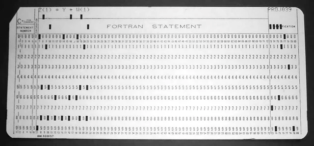
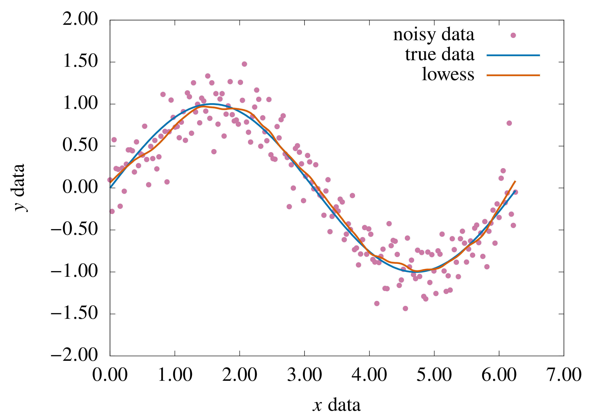
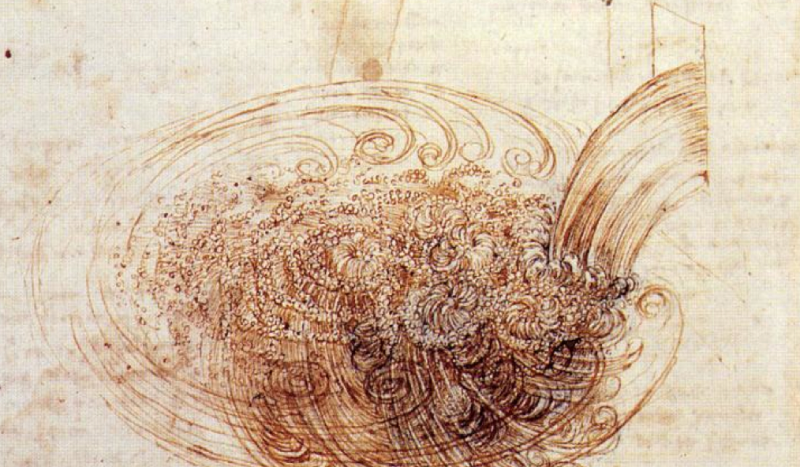

Ensino (Teaching)
Table of Contents
- 1. TEA-010 Matemática Aplicada I
- 2. TEA-040B Implementação Computacional de Modelos de Evaporação e Evapotranspiração
- 3. TEA-005 Mecânica dos Sólidos I — Substituição do Prof. Emílio
- 4. EAMB-7024 Métodos Numéricos em Engenharia Ambiental
- 5. TEA-013 Matemática Aplicada II
- 6. EAMB-7040 (Tópicos especiais) Programação Paralela em Chapel
- 6.1. Ementa
- 6.2. Avaliação
- 6.3. Bibliografia
- 6.4. Notas on-line (on-line notes and programs)
- 6.4.1. Introduction
- 6.4.2. Installation
- 6.4.3. Overview
- 6.4.4. Control structures
- 6.4.5. Ranges, domains and arrays
- 6.4.6. Input and Output
- 6.4.7. First look at parallelism
- 6.4.8. Types and records
- 6.4.9. Procedures
- 6.4.10. Parallelization with shared memory
- 6.4.11. LOWESS: a different example of parallelization
- 6.4.12. Using time
- 7. TEA-018 Hidrologia Ambiental (Em conjunto com EAMB-7039 (Tópicos Especiais) Hidrologia Física)
- 8. TEA-023/EAMB-7003 Dispersão Atmosférica e Qualidade do Ar/Camada-Limite Atmosférica e Modelos de Dispersão Atmosférica
- 9. EAMB-7050 Mecânica da Turbulência
- 10. MNUM7092 Chapel
- 11. EAMB-7040 (Tópicos especiais) Programação Paralela em Chapel
- 12. EAMB-7039 (Tópicos Especiais) Ferramentas computacionais para redação técnica e científica: LaTeX e Gnuplot
- 13. EAMB-7021 Mecânica dos Fluidos Ambiental Intermediária
- 14. TEA-034 Tópicos Especiais em Engenharia Ambiental: Técnicas de Aprendizagem Acadêmica
- 15. EAMB7023-TEA-752 Métodos Matemáticos em Engenharia Ambiental
- 16. EAMB-7009 Dinâmica espectral da turbulência
Modified in 2026-04-02T07:48:15 Brasilia Time.
This site is searchable. See HELP on the right (you may need to click around a few times until HELP shows up).
1. TEA-010 Matemática Aplicada I
1.1. Sala e Horário
Sala: PM-01
Horário: 07:30–09:10
1.2. Programa
1- Ferramentas computacionais para programação e processamento simbólico. 2- Revisão de programação científica. 3- Vetores, matrizes e coordenadas. 4- Campos escalares e vetoriais. 5- Equações diferenciais de 1a e 2a ordens. 6- Teoria de variáveis complexas: analiticidade, séries,teorema do resíduo e integração de contorno. 7- Soluções em série de equações diferenciais. 8- Transformada de Laplace.
1.3. Objetivo Geral
Apresentar métodos matemáticos aplicados à solução de problemas de Engenharia..
1.4. Objetivos específicos
- Apresentar exemplos de implementação computacional de métodos matemáticos.
- Discutir o conceito de dimensão física, com aplicações em Engenharia e definição em Álgebra Linear.
- Discutir o significado e aplicações de vetores, matrizes, sistemas de coordenadas, campos escalares e vetoriais em aplicações de Engenharia.
- Discutir o significado e o uso de equações diferenciais ordinárias e suas soluções em Engenharia.
- Apresentar numerosas aplicações de variáveis complexas em Engenharia.
- Discutir o uso de Transformada de Laplace em Engenharia.
1.5. Procedimentos didáticos
Aulas expositivas, exercícios em sala de aula, uso de computador.
1.6. Formas de avaliação
Avaliações presenciais.
1.7. Bibliografia básica
Dias, N. L. (2006) Uma Introdução aos Métodos Matemáticos para Engenharia, 2a edição (versão mais recente com adições e correções; ainda sem ISBN) : matappa-2ed.pdf
1.8. Bibliografia complementar
- Butkov, E. (1988). Física Matemática. Guanabara Koogan, Rio de Janeiro
- Greenberg, M. D. (1998). Advanced Engineering Mathematics. Prentice Hall, Upper Saddle River, New Jersey 07458, 2a edição
- Greenberg, M. D. (1978). Foundations of Applied Mathematics. Prentice-Hall, London
- Boas, M. (1983). Mathematical Methods in the Physical Sciences. John wiley & Sons
1.9. Cronograma de Aulas
| Aula | Data | Conteúdo Previsto | Conteúdo Realizado |
|
1 |
<2026-02-23 seg> |
Introdução à disciplina. Motivação: como saber se um ponto está dentro de uma bacia hidrográfica? "Winding point algorithm", e uma implementação que quase não usa operações de ponto flutuante. Conexões com trigonometria, análise complexa. Aritmética e Álgebra. |
Introdução à disciplina. Motivação. Aritmética e Álgebra. Início de Análise Dimensional. |
|
2 |
<2026-02-25 qua> |
Introdução à Análise Dimensional. Força sobre cilindro. |
Winding point. Força sobre cilindro. |
|
3 |
<2026-02-27 sex> |
Definição de dimensão. Teorema dos Pis. |
Definição de dimensão. Teorema dos Pis. Similaridade imperfeita. |
|
4 |
<2026-03-02 seg> |
Similaridade imperfeita, significado de dimensão fundamental. |
|
|
5 |
<2026-03-04 qua> |
Problemas de Análise Dimensional. |
Revisão de números complexos I. Conceitos básicos. |
|
6 |
<2026-03-06 sex> |
Problemas de Análise Dimensional. |
Revisão de números complexos II: álgebra e cálculo com números complexos. Geometria e Álgebra: vetores geométricos e algébricos: bases, elementos, coordenadas. Álgebra Linear: espaço vetorial. |
|
7 |
<2026-03-09 seg> |
Revisão de números complexos. |
Aplicações geomericas. Teoremas de Pitágoras e dos cossenos. Produto escalar. Exemplos. Convenção de soma de Einstein. |
|
8 |
<2026-03-11 qua> |
Geometria e Álgebra: vetores geométricos e algébricos: bases, elementos, coordenadas. Álgebra LInear: espaço vetorial. |
Convenção de soma de Einstein. Ortogonalização de Gram-Schmmidt. Permutações, \(\epsilon_{i_1,i_2,\ldots,i_n}\) de Levi-Civitta, Identidade polar. |
|
9 |
<2026-03-13 sex> |
Aplicações geomericas. Teoremas de Pitágoras e dos cossenos. Produto escalar. Exemplos. |
Produto vetorial. |
|
10 |
<2026-03-16 seg> |
Convenção de soma de Einstein. Ortogonalização de Gram-Schmmidt. Permutações, \(\epsilon\). |
Produto misto. Determinante. Bases dextrógiras e levógiras. Funções lineares, funcionais lineares. Teorema da representação. |
|
11 |
<2026-03-18 qua> |
Identidade polar, produto vetorial. Produto misto. |
Transformações lineares. Base de uma transformação linear. |
|
12 |
<2026-03-20 sex> |
Determinante. Bases dextrógiras e levógiras. |
Rotações. |
|
13 |
<2026-03-23 seg> |
Funções lineares, funcionais lineares. Teorema da representação. |
Domínio, núcleo, imagem. |
|
14 |
<2026-03-25 qua> |
Transformações lineares. Base de uma transformação linear. |
Teorema dos Pis. Viga engastada: posto menor do que o número de dimensões fundamentais. |
|
15 |
<2026-03-27 sex> |
Rotações. Sistemas de equações lineares. |
Teorema dos Pis. Viga engastada: posto menor do que o número de dimensões fundamentais. |
|
16 |
<2026-03-30 seg> |
Domínio, núcleo, imagem. Teorema dos Pis. viga engastada: posto menor do que o número de dimensões fundamentais. |
Teorema dos Pis. Viga engastada: posto menor do que o número de dimensões fundamentais. (longa discussão, detalhada, tomando 3 aulas). |
|
17 |
<2026-04-01 qua> |
*P1* |
|
|
|
<2026-04-03 sex> |
*Feriado:* Paixão de Cristo. |
|
|
18 |
<2026-04-06 seg> |
Autovalores e autovetores: exemplo 5.27. Invariantes. Exemplo 5.28. Transformações simétricas. Autovalores a autovetores de uma matriz simétrica real. |
|
|
19 |
<2026-04-08 qua> |
Funções no \(\mathbb{R}^n\). Regra da cadeia, séries de Taylor. Teorema da função implícita (2 dimensões). Casos particulares \(x=x(u,v)\), \(y=y(u,v)\). |
|
|
20 |
<2026-04-10 sex> |
Teorema da função implícita: caso geral. Jacobiano. Exemplos. |
|
|
21 |
<2026-04-13 seg> |
Regra de Leibnitz. Exemplos. |
|
|
22 |
<2026-04-15 qua> |
Comprimentos, áreas, volumes. Integrais de linha. |
|
|
23 |
<2026-04-17 sex> |
Integrais de superfície. Integrais de corpo (volume). |
|
|
|
<2026-04-20 seg> |
*Feriado:* Tiradentes. |
|
|
24 |
<2026-04-22 qua> |
Div, Grad. Exemplos. |
|
|
25 |
<2026-04-24 sex> |
Rotacional. Mais operadores e identidades. |
|
|
26 |
<2026-04-27 seg> |
Mudança de coordenadas. Gauss e Stokes. Campos irrotacionais. |
|
|
27 |
<2026-04-29 qua> |
Campos irrotacionais |
|
|
|
<2026-05-01 sex> |
*Feriado:* Dia do trabalho. |
|
|
28 |
<2026-05-04 seg> |
Equações diferenciais ordinárias. Classificação. EDOs lineares de ordem 1. |
|
|
29 |
<2026-05-06 qua> |
Exemplos de EDOs lineares de ordem 1. Equações linearizáveis (Bernoulli). Diferenciais exatas. |
|
|
30 |
<2026-05-08 sex> |
*P2* |
|
|
31 |
<2026-05-11 seg> |
EDOs com coeficientes constantes de ordem 2. Equação de Euler. |
|
|
32 |
<2026-05-13 qua> |
Revisão geral de EDOs. |
|
|
33 |
<2026-05-15 sex> |
Variáveis complexas: funções plurívocas. Derivada. Funções analíticas. Condições de Cauchy-Riemman. |
|
|
34 |
<2026-05-18 seg> |
Sequências e séries. |
|
|
35 |
<2026-05-20 qua> |
Sequências e séries |
|
|
36 |
<2026-05-22 sex> |
Sequências e séries |
|
|
37 |
<2026-05-25 seg> |
Teorema de Cauchy. Deformação de caminho. Fórmula integral de Cauchy. Séries de Taylor e Laurent. |
|
|
38 |
<2026-05-27 qua> |
Séries de Laurent. |
|
|
39 |
<2026-05-29 sex> |
Integração de Contorno. |
|
|
40 |
<2026-06-01 seg> |
Solução de EDOs em séries. O método de Frobenius. |
|
|
41 |
<2026-06-03 qua> |
Caso (i) |
|
|
|
<2026-06-05 sex> |
*Feriado:* Corpus Christi |
|
|
42 |
<2026-06-08 seg> |
Caso (ii) |
|
|
43 |
<2026-06-10 qua> |
Caso (iii)-a |
|
|
44 |
<2026-06-12 sex> |
Caso (iii)-b |
|
|
45 |
<2026-06-15 seg> |
Transformada de Laplace: definição, existência, cálculo. |
|
|
46 |
<2026-06-17 qua> |
Transformada de Laplace: Propriedades. |
|
|
47 |
<2026-06-19 sex> |
Transformada de Laplace: Convolução. |
|
|
48 |
<2026-06-22 seg> |
Transformada de Laplace: truques adicionais e inversão. |
|
|
49 |
<2026-06-24 qua> |
*P3* |
|
|
50 |
<2026-06-26 sex> |
*S* |
|
|
51 |
<2026-07-03 sex> |
*F* |
|
1.10. Notas
1.11. Gabaritos
1.12. Arquivos de provas passadas
- 2003-1-sol.pdf
- 2004-1-sol.pdf
- 2005-1-sol.pdf
- 2006-1-sol.pdf
- 2008-1-sol.pdf
- 2009-1-sol.pdf
- 2010-1-sol.pdf
- 2011-1-sol.pdf
- 2012-1-sol.pdf
- 2013-1-sol.pdf
- 2014-1-sol.pdf
- 2015-1-sol.pdf
- 2016-1-sol.pdf
- 2017-1-sol.pdf
- 2018-1-sol.pdf
- 2019-1-sol.pdf
- 2020-2-sol.pdf
- 2021-1-sol.pdf
- 2022-1-sol.pdf
- 2023-1-sol.pdf
- 2024-1-sol.pdf
- 2025-1-sol.pdf
2. TEA-040B Implementação Computacional de Modelos de Evaporação e Evapotranspiração
A disciplina será ofertada na forma de leitura e discussão de artigos científicos sobre evaporação, seguidas de apresentação, pelo professor, de bibliotecas de rotinas em Chapel com a implementação dos modelos.
2.1. Sala e horário
Sala: PF-16
Horário: 09:30–11:10
2.2. Programa
Conceitos históricos: Halley. Lei de Dalton. Marcos científicos sobre modelos de evaporação e evapotranspiração. Fundamentos físicos. Evaporação potencial (Thornthwaite) e Evaporação potencial aparente (Penman). Priestley-Taylor e Hargreaves. Relação complementar (CRAE, Brutsaert). Balanço hídrico. Balanço de energia. Evaporação em lagos: Modelo de Kohler&Parmele, CRLE, STAEBLE. Bibliotecas científicas em Chapel com implementações dos diversos modelos.
2.3. Objetivo Geral
Capacitar os alunos a implementar computacionalmente alguns dos modelos de evaporação mais comuns em Hidrologia, com boa fundamentação teórica.
2.4. Objetivos Específicos
- Capacitar os alunos a implementar bibliotecas computacionais simples porém eficientes para apoiar cálculos de evaporação.
- Apresentar os fundamentos físicos necessários para a implementação de modelos de evaporação
- Apresentar os principais conceitos utilizados em modelos de evaporação.
2.5. Procedimentos didáticos
Aulas presenciais com computador.
2.6. Formas de avaliação
3 avaliações envolvendo a implementação de diferentes métodos de cálculo de evaporação
2.7. Cronograma de Aulas
| Aula | Data | Conteúdo Previsto | Conteúdo Realizado |
|
1 |
<2026-02-23 seg> |
A Evaporação como explicação para o ciclo hidrológico e sua quantificação: de Halley a Dalton. - forçantes: vento e sol. - quanto vale "1 Grain of Water?" - quais as unidades de temperatura de E. Halley? - \(M = E\Delta t = \rho_w 1 h_E\) *Leituras*: Halley e Dalton. |
A Evaporação como explicação para o ciclo hidrológico e sua quantificação: de Halley a Dalton. - forçantes: vento e sol. - quanto vale "1 Grain of Water?" - quais as unidades de temperatura de E. Halley? - \(M = E\Delta t = \rho_w 1 h_E\) *Leituras*: Halley e Dalton. |
|
2 |
<2026-02-25 qua> |
"Por que Chapel?" Uma discussão "hands on" de módulos, bibliotecas, e sua implementação em diversas linguagens, incluindo Fortran, C, Python e Chapel. Escolha sua linguagem. |
Halley. Diversas concentrações de gases no ar. |
|
3 |
<2026-03-02 seg> |
Vapor d'água no ar: diferentes índices de umidade e seu cálculo. |
Vapor d'água no ar: diferentes índices de umidade e seu cálculo. Vapor d'água no ar: continuação. Uma visita a atmgas.chpl. Thornthwaite e evapotranspiração potencial. *Leituras*: Murray, Huang, Richards, Thornthwaite. |
|
4 |
<2026-03-04 qua> |
Vapor d'água no ar: continuação. Uma visita a atmgas.chpl. *Leituras*: Murray, Huang, Richards. |
Movimento da Terra no espaço, radiação solar, radiação líquida. Conceitos básicos de radiação solar e atmosférica. |
|
5 |
<2026-03-09 seg> |
Conceitos básicos de radiação solar e atmosférica. |
A fórmula para radiação atmosférica de céu claro de Brutsaert 1975. A variável de estabilidade de Obukhov. |
|
6 |
<2026-03-11 qua> |
Radiação: continuação. Uma visita a evap.chpl. *Leituras*: Brutsaert 1975. |
Revisita a Implementação de Thornthwaite 1948. Evaporação potencial aparente \(E_{pa}\) e evaporação potencial \(E_{p0}\). Relação complementar. Abordagens de Morton (1976), Brutsaert & Stricker (1979) e Brutsaert (2015) |
|
7 |
<2026-03-16 seg> |
Evaporação potencial de Thornthwaite. Leitura em sala (Thornthwaite 1948), discussão. |
Uma visita ao módulo evap.chpl. |
|
8 |
<2026-03-18 qua> |
Thornthwaite 1948. Implementação. |
Continuação da visita ao módulo evap.chpl. |
|
9 |
<2026-03-23 seg> |
Penman: dedução moderna. |
Continuação da visita ao módulo evap.chpl. Várias questões relacionadas ao processamenot de dados meteorológicos para cálculo dos componentes da radiação líquida. |
|
10 |
<2026-03-25 qua> |
Leitura em sala (Penman 1948). |
Penman: dedução moderna. Leitura em sala (Penman 1948). |
|
11 |
<2026-03-30 seg> |
Penman: ajuste das figuras 2 e 3. Reproducao das equações de regressão. |
Penman: ajuste das figuras 2 e 3. Reproducao das equações de regressão. |
|
12 |
<2026-04-01 qua> |
*T1* Otenha um arquivo de dados meteorológicos com \(T_a\), \(y\), \(R_s\), \(u\), \(p\). Gere a série de \(e_a\); gere as séries de \(R_a\) (com Brutsaert), \(R_e\), e \(R_n\). O que vc vai fazer com \(T_0\)? |
|
|
13 |
<2026-04-06 seg> |
Penman-Montheith. Dedução moderna. |
|
|
14 |
<2026-04-08 qua> |
Leitura em sala: Monteith 1965. Implementação de Penman-Monteith? |
|
|
15 |
<2026-04-13 seg> |
Priestley-Taylor 1972. Leitura em sala, implementação. |
|
|
16 |
<2026-04-15 qua> |
A relação complementar: Bouchet, Brutsaert-Stricker, Morton. |
|
|
17 |
<2026-04-20 seg> |
Implementação computacional de Brutsaert-Stricker. |
|
|
18 |
<2026-04-22 qua> |
A relação complementar de Brutsaert 2015: qual é a diferença? |
|
|
19 |
<2026-04-27 seg> |
Balanço hídrico sazonal: Dias e Kan 1999. |
|
|
20 |
<2026-04-29 qua> |
Balanço hídrico sazonal: Dias e Kan 1999. |
|
|
21 |
<2026-05-04 seg> |
ANA 2021: ajuste da estimativa MODIS com o balanço hídrico. |
|
|
22 |
<2026-05-06 qua> |
*T2* Com os dados que você obteve no T1, implemente um método de cálculo de evapotranspiração real. |
|
|
23 |
<2026-05-11 seg> |
Evaporação em lagos: conceitos fundamentais. Transferência de massa, balanço de energia, problemas de advecção, dificuldades operacionais de medição "no meio do lago" |
|
|
24 |
<2026-05-13 qua> |
Transferência de massa com dados parcialmente medidos em terra: Harbeck 1962. Uma ideia longeva: McJannet 2012. |
|
|
25 |
<2026-05-18 seg> |
Solução parcial de \(T_0\) desconhecida e \(f(u)\) idem: Kohler e Parmele 1967. |
|
|
26 |
<2026-05-20 qua> |
Outra solução para o desconhecimento de \(T_0\) e \(f(u)\): Morton 1983 CRLE (Importante, porque usando durante muito tempo no Brasil). |
|
|
27 |
<2026-05-25 seg> |
Um ataque físico para 1990. Difícil de implementar! |
|
|
28 |
<2026-05-27 qua> |
A utilidade de \(T_0\): Yu & Brutsaert 1969. |
|
|
29 |
<2026-06-01 seg> |
A utilidade de \(T_0\): Dias & Kan 2008. |
|
|
30 |
<2026-06-03 qua> |
Obtenção de \(T_0\) via MODIS: concepção do STAEBLE. |
|
|
31 |
<2026-06-08 seg> |
STAEBLE: Dias et al 2023. |
|
|
32 |
<2026-06-10 qua> |
STAEBLE: implementação computacional. |
|
|
33 |
<2026-06-15 seg> |
Limitação fundamental do STAEBLE: período de medição de \(T_0\) pelo MODIS. Alternativa: modelos de estimativa de \(T_0\) utilizando (entre outros) a temperatura do ar \(T_a\). |
|
|
34 |
<2026-06-17 qua> |
Séries de evaporação em lago de longo curso: perspectivas climáticas I. |
|
|
35 |
<2026-06-22 seg> |
Séries de evaporação em lago de longo curso: perspectivas climáticas II. |
|
|
36 |
<2026-06-24 qua> |
*T3* Com base em dados meteorológicos vizinhos a um lago, implemente um modelo de evaporação em lago. |
|
2.8. Bibliografia básica
Apenas para acompanhamento dos conceitos gerais. O cerne da disciplina será baseado na leitura e discussão dos artigos da bibliografia complementar.
- Chow, V. T.; Maidment, D. R. & Mays, L. W. Applied Hydrology McGraw-Hill, 1988
- Brutsaert, W. Evaporation into the atmosphere D. Reidel, 1982
- Brutsaert, W. Hydrology. An Introduction. Cambridge, 2005
- Dias, N. L. Notas de aula (2026): mevap.pdf
2.9. Bibliografia Complementar.
- Alduchov, O. A. & Eskridge, R. E. Improved Magnus form approximation of saturation vapor pressure. Journal of Applied Meteorology, 1996, 35, 601-609.
- Brutsaert, W. & Stricker, H. An Advection-Aridity Approach to Estimate Actual Regional Evapotranspiration. Water Resources Research, 1979, 15, 443-450.
- Brutsaert, W. A generalized complementary principle with physical constraints for land-surface evaporation. Water Resources Research, 2015, 51, 8087-8093
- Dalton, J. Experimental Essays on the Constitution of Mixed Gases: On the Force of Steam or Vapour from Water or Other Liquids in Different Temperatures, Both in a Torricelli Vacuum and in Air; on Evaporation; and on Expansion of Gases by Heat Memoirs of the Literary and Philosophical Society of Manchester, 1802, 5, 536-602
- Dias, N. L. & Kan, A. A hydrometeorological model for basin-wide seasonal evapotranspiration. Water Resources Research, 1999, 35, 3409-3418
- Dias, N. L.; Hoeltgebaum, L. E. B. & Santos, I. STAEBLE: A surface-temperature- and available-energy-based lake evaporation model. Water Resources Research, 2023, WRCR26469.
- Halley, E. An estimate of the quantity of vapour raised out of the sea by the warmth of the sun Phil. Trans. R. Roc., 1687, 189, 366-370
- Halley, E. An Account of the circulation of watry Vapours of the Sea, and of the Cause of Springs Phil. Trans. R. Roc., 1691, 192, 468-473.
- Halley, E. An Account of the Evaporation of Water, as it was Experimented in Gresham Colledge in the Year 1693. With some Observations thereon. Phil. Trans. R. Roc., 1694, 212, 468-473
- Harbeck Jr., G. E. A practical field technique for measuring
reservoir evaporation utilizing mass-transfer theory
- S. Geological Survey, U. S. Geological Survey, 1962.
- Hargreaves, G. H. Irrigation requirement data for central valley crops. 1948.
- Hargreaves, G. H. & Allen, R. G. History and evaluation of Hargreaves evapotranspiration equation. Journal of irrigation and Drainage Engineering, American Society of Civil Engineers, 2003, 129, 53-63.
- Hostetler, S. W. & Bartlein, P. J. Simulation of lake evaporation with application to modeling lake level variations of Harney-Malheur Lake, Oregon. Water Resources Research, 1990, 26, 2603-2612
- Huang, J. A Simple Accurate Formula for Calculating Saturation Vapor Pressure of Water and Ice. Journal of Applied Meteorology and Climatology, 2018, 57, 1265-1272.
- Dias, N. L. & Kan, A. Evaporação líquida no reservatório de Foz do Areia, PR: Estimativas dos modelos de relação complementar versus balanço hídrico sazonal e balanço de energia. Revista Brasileira de Recursos Hídricos, 2008, 13, 31-43.
- Kohler, M. & Parmele, L. Generalized estimates of free-water evaporation. Water Resources Research, 1967, 3, 997-1005
- Leuning, R.; Zhang, Y.; Rajaud, A.; Cleugh, H. & Tu, K. A simple surface conductance model to estimate regional evaporation using MODIS leaf area index and the Penman-Monteith equation Water Resources Research, Wiley Online Library, 2008, 44.
- McJannet, D. L.; Webster, I. T. & Cook, F. J. An area-dependent wind function for estimating open water evaporation using land-based meteorological data #envmod#, Elsevier, 2012, 31, 76-83
- Monteith, J. L. Evaporation and environment Symposia of the society for experimental biology, 1965, 19, 205-234.
- Morton, F. I. Operational estimates of areal evapotranspiration and their significance to the science and practice of hydrology Journal of Hydrology, 1983, 66, 1-76
- Morton, F. I. Operational Estimates of Lake Evaporation. Journal of Hydrology, 1983, 66, 77-100
- Murray, F. W. On the computation of saturation vapor pressure. Journal of Applied Meteorology, 1966, 6, 203-204.
- Patterson, L. D. Thermometers of the Royal Society, 1663–1768 American Journal of Physics, 1951, 19, 523-535
- Penman, H. Natural evaporation from open water, bare soil and grass. Proceedings of the Royal Society, London, 1948, A, 120-146
- Priestley, C. H. B. & Taylor, R. J. On the Assessment of Surface Heat Flux and Evaporation Using Large Scale Parameters Monthly Weather Review, 1972, 100, 80-92
- Thornthwaite, C. W. An approach toward a rational classification of climate. The Geographical Review, 1948, 38, 55-94
- Richards, J. A simple expression for the saturation vapour pressure of water in the range -50° to 140°C. Journal of Physics D: Applied Physics, IOP Publishing, 1971, 4, L15-L18.
- Richards, J. A simple expression for the saturation vapour pressure of water in the range -50 to 140 °C (CORRIGENDUM) Journal of Physics D: Applied Physics, IOP Publishing, 1971, 4, 876.
- Yu, S. L. & Brutsaert, W. Generation an Evaporation Time Series Lake Ontario. Water Resources Research, 1969, 5, 785-794.
3. TEA-005 Mecânica dos Sólidos I — Substituição do Prof. Emílio
3.1. Programa
| Aula | Data | Conteúdo Previsto | Conteúdo Realizado |
|
22 |
<2025-09-22 seg> |
*Semana de Engenharia Ambiental* |
|
|
23 |
<2025-09-24 qua> |
*Semana de Engenharia Ambiental* |
|
|
24 |
<2025-09-26 sex> |
*Semana de Engenharia Ambiental* |
|
|
13 |
<2025-09-30 ter> |
Centros de massa de corpos: cálculo de centróides e centros de massa de linhas, áreas e volumes utilizando integração simples e múltipla, centros de massa de corpos compostos. Forças distribuídas: cálculo de resultantes de forças distribuídas e momentos causados por forças distribuídas, efeitos internos em vigas. Cabos Flexíveis. |
Centros de massa de corpos: cálculo de centróides e centros de massa de linhas. Devendo a \(\int \sec^3(\theta)\,d\theta\). |
|
14 |
<2025-10-02 qui> |
Centros de massa de corpos. Forças distribuídas. Efeitos internos em vigas. Cabos Flexíveis. |
Cálculo detalhado da \(\int \sec^3(\theta)\,d\theta\). Centróide de áreas. |
|
15 |
<2025-10-07 ter> |
Centros de massa de corpos. Forças distribuídas. Efeitos internos em vigas. Cabos Flexíveis. |
Corpos compostos. |
|
16 |
<2025-10-09 qui> |
Centros de massa de corpos. Forças distribuídas. Efeitos internos em vigas. Cabos Flexíveis. |
Centróide de volumes. Teorema de Pappus. |
|
17 |
<2025-10-14 ter> |
Centros de massa de corpos. Forças distribuídas. Efeitos internos em vigas. Cabos Flexíveis. |
Forças distribuídas. Efeitos internos em vigas |
|
18 |
<2025-10-16 qui> |
*P3* Lista de Exercícios: Meriam 6a edição 5.5, 5.6, 5.7, 5.74, 5.75, 5.97, 5.113, 5.117, 5.120, 5.125 |
*P3* |
4. EAMB-7024 Métodos Numéricos em Engenharia Ambiental
4.1. Ementa
Introdução; Problemas de equilíbrio; Problemas transientes: equações parabólicas e hiperbólicas , condições auxiliares; Classificação e características das equações diferenciais parciais; Equações de diferenças finitas: aproximação por diferenças finitas , discretização espacial e temporal, discretizações multidimensionais, consistência, convergência e estabilidade, formulações de ordem elevada; Técnicas de solução numérica: sistemas lineares, equações elípticas, métodos diretos, métodos iterativos, método de Gauss-Seidel, método de sobre-relaxação, condições de contorno tipo Neummann, equações hiperbólicas, equações de convecção e da onda linear, método de Runge-Kutta; Equações parabólicas; Aplicações em problemas ambientais: modelagem de aquíferos, dispersão em rios, modelos ecológicos. Método de Lattice Boltzmann.
4.2. Programa
| Aula | Data | Conteúdo Previsto | Conteúdo Realizado |
|
1 |
<2025-08-04 seg> |
Introdução à disciplina, linguagens de programação aceitas neste curso. Exemplos em Fortran, C e Chapel. |
Introdução à disciplina, linguagens de programação aceitas neste curso. Exemplos em Fortran, C e Chapel. |
|
2 |
<2025-08-06 qua> |
Mais exemplos em Fortran, C e Chapel. |
Mais exemplos em Fortran, C e Chapel. |
|
3 |
<2025-08-11 seg> |
Floating point format, Cubic root and Newton-Raphson, fractal image, parallelization. Finite-difference approximations and their orders. |
Floating point format, Cubic root and Newton-Raphson, fractal image, parallelization. Finite-difference approximations and their orders. |
|
4 |
<2025-08-13 qua> |
Euler order 1, analytical implicit approximation, \(dy/dx = f(x,y)\), 2nd-order scheme. |
Euler order 1, analytical implicit approximation, \(dy/dx = f(x,y)\), 2nd-order scheme. |
|
5 |
<2025-08-18 seg> |
Runge-Kutta 4th-order and Adams-Bashforth. Array interlude: fixing a Chapel limitation with the ada.chpl module. |
Runge-Kutta 4th-order and Adams-Bashforth. Array interlude: fixing a Chapel limitation with the ada.chpl module. |
|
6 |
<2025-08-20 qua> |
Vector Runge-Kutta. Example: the kinematic wave. |
A long review of the ada.chpl module. Vector Runge-Kutta: begining of the kinematic wave example. |
|
7 |
<2025-08-25 seg> |
Problemas de valor de contorno em 1D: algoritmo de Thomas e ordem de convergência. O efeito da condição de contorno na ordem de convergência. |
Completion of the kinematic wave example. Beginning of boundary-value problems in 1D. |
|
8 |
<2025-08-27 qua> |
Solução numérica de EDPs: onda cinemática – esquema explícito instável. onda1d-ins.chpl e surf1d-ins.chpl. Análise de estabilidade de von Newmann. |
O efeito da condição de contorno na ordem de convergência. |
|
9 |
<2025-09-01 seg> |
Esquema de Lax. Difusão numérica. Upwind. Quick. Início do Quickest. |
Solução numérica de EDPs: onda cinemática – esquema explícito instável. onda1d-ins.chpl e surf1d-ins.chpl. Análise de estabilidade de von Newmann. |
|
10 |
<2025-09-03 qua> |
Continuação e conclusão do Quickest. Exemplo 3.1: estabilidade de um esquema com dois parâmetros, \(Cou\) e \(Fou\). |
Esquema de Lax. Difusão numérica. Upwind. |
|
11 |
<2025-09-08 seg> |
Problemas de valor de contorno em 1D: algoritmo de Thomas e ordem de convergência. |
Quick. |
|
12 |
<2025-09-10 qua> |
O efeito da condição de contorno na ordem de convergência. |
Quickest. Exemplo 3.1: estabilidade de um esquema com dois parâmetros, \(Cou\) e \(Fou\). |
|
13 |
<2025-09-15 seg> |
Livre. |
|
|
14 |
<2025-09-17 qua> |
Livre. |
|
|
15 |
<2025-09-22 seg> SAEamb |
Advecção pura. Onda cinemática. |
|
|
16 |
<2025-09-24 qua> SAEmb |
Análise de estabilidade de von Neumman. |
|
|
17 |
<2025-09-29 seg> |
Método de Lax. Difusão numérica. Upwind. Exemplo 4.1: Análise de estabilidade com 2 parâmetros. |
Difusão pura. Solução analítica. Esquema explícito. Difusão pura. Esquemas implícitos. |
|
18 |
<2025-10-01 qua> |
P1. *Entrega do TC1*. |
P1 |
|
19 |
<2025-10-06 seg> |
Quick. |
Difusão em 2D. ADI e Equações elíticas |
|
20 |
<2025-10-08 qua> |
Quickest. |
Seção 4.5: SOR. |
|
21 |
<2025-10-13 seg> |
Difusão pura. Solução analítica. Esquema explícito. |
SOR |
|
22 |
<2025-10-15 qua> |
Difusão pura. Esquemas implícitos. |
?? |
|
23 |
<2025-10-20 seg> XIV |
Livre. |
|
|
24 |
<2025-10-22 qua> XIV |
Livre. |
|
|
25 |
<2025-10-27 seg> |
Difusão pura. Esquemas implícitos: Crank-Nicholson. |
Jacobi |
|
26 |
<2025-10-29 qua> |
Difusão pura. Exemplo 4.3: condições de contorno. |
Gauss-Seidel |
|
27 |
<2025-11-03 seg> |
Difusão pura. Exemplo 4.4: solução da equação de advecção-difusão \( \partial\phi/\partial t + U\partial\phi/\partial x = D\partial^2\phi/\partial x^2 - K\phi \) |
Gauss-seidel Red-Black. |
|
28 |
<2025-11-05 qua> |
Difusão em 2D. ADI e Equações elíticas |
Multigrid. |
|
29 |
<2025-11-10 seg> |
Seção 4.5: SOR. |
Multigrid. |
|
30 |
<2025-11-12 qua> |
Seção 4.6: SOR black & white. |
Multigrid. |
|
31 |
<2025-11-17 seg> |
Navier-Stokes: notação. Balanço de massa. Balanço de massa de um escalar. |
Multigrid 2D. |
|
32 |
<2025-11-19 qua> |
Balanço de quantidade de movimento em \(x\). |
Multigrid 2D. |
|
33 |
<2025-11-24 seg> |
Balanço de quantidade de movimento em \(y\). |
Multigrid 2D. |
|
34 |
<2025-11-26 qua> |
Poisson (caso geral). |
|
|
35 |
<2025-12-01 seg> |
Poisson com CC de Neumman. |
|
|
36 |
<2025-12-03 qua> |
Navier-Stokes: Marcha no tempo. |
|
|
37 |
<2025-12-08 seg> |
Multigrid 1D. |
|
|
38 |
<2025-12-10 qua> |
Multigrid 1D. |
|
|
39 |
<2025-12-15 seg> |
P2. |
|
|
40 |
<2025-12-17 qua> |
Finais. |
|
4.3. Notas de aula: chplnum-2025.pdf
4.4. Avaliação
2 trabalhos individuais e 2 provas. Os trabalhos deverão ser entregues por email (mailto:nldias@ufpr.br) no seguinte formato:
- Um arquivo pdf (A4, Times-Roman, margens de 2.5cm) com a descrição teórica do trabalho (problema científico ou de engenharia, método numérico, etc.), resultados com figuras e tabelas, etc.; e a descrição do programa de computador (linguagem utilizada, principais tarefas que o programa realiza, questões computacionais relevantes).
- Um arquivo-fonte com o programa em uma das linguagens que podem ser utilizadas (ver tabela abaixo).
4.5. Trabalhos computacionais:
4.5.1. Linguagens que podem ser utilizadas nesta disciplina
A disciplina será lecionada com exemplos em Chapel, que é uma linguagem intrinsicamente paralela, com recursos de programação semelhantes a Python, e eficiência igual a Fortran. No entanto, os alunos poderão escolher várias linguagens para fazer seus trabalhos (veja a seguir).
Por exemplo, eis aqui um programa que resolve uma equação diferencial com o método de Runge-Kutta:
// -----------------------------------------------------------------------------
// rungek4: resolve a equação diferencial
// dy/dx + y/x = sen(x)
// usando o método de Runge-Kutta de ordem 4
// -----------------------------------------------------------------------------
use Math only sin, cos;
use IO only openWriter;
config const h = 0.1; // passo em x
const n = round(50/h):int; // número de passos
var
x, // variável independente
y: // variável dependente
[0..n] real;
x[0] = 0.0; // x inicial
y[0] = 0.0; // y inicial
// -----------------------------------------------------------------------------
// função que define a EDO dy/dx = sen(x) - y/x
// -----------------------------------------------------------------------------
proc ff(
const in x: real,
const in y: real
): real {
if x == 0.0 then {
return 0.0 ;
}
else {
return sin(x) - y/x ;
}
}
// -----------------------------------------------------------------------------
// rk4 implementa um passo do método de Runge-Kutta de ordem 4
// -----------------------------------------------------------------------------
proc rk4(
const in x: real,
const in y: real,
const in h: real,
const ref af: proc(
const in ax: real,
const in ay: real
): real
): real {
var k1 = h*af(x,y);
var k2 = h*af(x+h/2,y+k1/2);
var k3 = h*af(x+h/2,y+k2/2);
var k4 = h*af(x+h,y+k3);
var yn = y + k1/6.0 + k2/3.0 + k3/3.0 + k4/6.0;
return yn;
}
for i in 0..n-1 do { // loop da solução numérica
var xn1 = (i+1)*h;
var yn1 = rk4(x[i],y[i],h,ff);
x[i+1] = xn1;
y[i+1] = yn1;
}
var erro = 0.0; // calcula o erro relativo médio
for i in 1..n do {
var yana = sin(x[i])/x[i] - cos(x[i]);
erro += abs( (y[i] - yana)/yana );
}
erro /= n ;
writef("erro relativo médio = %10.5dr",erro);
writeln();
const fou = openWriter("rungek4.out",locking=false);
for i in 0..n do { // imprime o arquivo de saída
fou.writef("%12.6dr %12.6dr\n",x[i],y[i]);
}
fou.close();
As linguagens em que os alunos poderão fazer seus trabalhos são
| Linguagem | Sistemas Operaconais | Onde encontrar |
|---|---|---|
| Chapel | Linux, MacOs, Windows(?) | https://chapel-lang.org/ |
| Fortran | Linux, MacOs, Windows | https://gcc.gnu.org/wiki/GFortran |
| C | Linux, MacOs, Windows | (Variável: parta de https://gcc.gnu.org/) |
5. TEA-013 Matemática Aplicada II
5.1. Horário
- Aulas: 2as, 4as, 6as, 07:30–09:10
- Local: PM-2
- Atendimento: Por agendamento em minha sala
5.2. Ementa
1- Ferramentas computacionais e solução numérica com diferenças finitas de equações diferenciais parciais: análise de estabilidade de von Neumman e exemplos escolhidos entre a equação da difusão, equação da onda, equação de Laplace, e outras de uso comum em Engenharia Ambiental. 2- Análise linear, sistemas lineares em Engenharia. 3- Séries e Transformadas de Fourier. Solução de equações diferenciais, análise espectral e análise de periodicidade em séries de dados naturais. 4- Funções de Green e Identidades de Green em Engenharia: Hidrógrafa Unitária Instanânea, Problemas de Dispersão de Poluentes. 5- Teoria de Sturm-Liouville e algumas funções especiais adicionais (Legendre, Laguerre, Hermite). Importância da teoria no método de separação de variáveis para equações diferenciais parciais. 6- Equações Diferenciais Parciais: problemas lineares e não-lineares em escoamentos na atmosfera, nos oceanos, em rios e no solo, e problemas de dispersão de poluentes. 7- Classificação e o método das características: escoamento em canais. Solução por separação de variáveis, transformadas integrais e transformada de Boltzmann.
5.3. Unidades Didáticas
- Transformada de Laplace
- Análise linear, sistemas lineares em Engenharia
- Séries e Transformadas de Fourier
- Teoria de Distribuições. Funções de Green e Identidades de Green em Engenharia: Hidrógrafa Unitária Instanânea, Problemas de Dispersão de Poluentes.
- Teoria de Sturm-Liouville e algumas funções especiais adicionais (Legendre, Laguerre, Hermite). Importância da teoria no método de separação de variáveis para equações diferenciais parciais.
- Equações Diferenciais Parciais: problemas lineares e não-lineares em escoamentos na atmosfera, nos oceanos, em rios e no solo, e problemas de dispersão de poluentes. Classificação e o método das características. Solução por separação de variáveis, transformadas integrais e transformada de Boltzmann.
5.4. Objetivos Didáticos
5.4.1. geral
A Disciplina TEA013 tem por objetivo aprofundar o domínio pelo aluno de modelos matemáticos analíticos e numéricos aplicáveis à Engenharia Ambiental.
5.4.2. específicos
A disciplina incluirá aplicações de: álgebra linear, espaços vetoriais normados, séries de Fourier e transformadas de Fourier, assim como diversas técnicas numéricas e analíticas de solução de equações diferenciais parciais. Essas técnicas são ilustradas com problemas em Mecânica dos Fluidos, Hidrologia, Meteorologia, Química Ambiental e Ecologia, enfatizando-se a capacidade de formular e de resolver alguns problemas típicos (dispersão,reações químicas, dinâmica de populações, etc.) de importância em Engenharia Ambiental.
5.5. Procedimentos didáticos
Aulas expositivas. Exemplos de métodos numéricos (programas, processamento, etc.) com projetor.
5.6. Avaliação
A disciplina é semestral. A avaliação da disciplina consiste de 3 exames parciais (\(P1\), \(P2\), \(P3\)), um exame subsitutivo \(S\) e um exame final \(F\). Os alunos poderão solicitar revisão de prova durante 3 dias úteis após a promulgação da nota. Após esse prazo, não será concedida nenhuma revisão. As soluções são disponibilizadas eletronicamente em \url{https://www.nldias.github.io}, juntamente com as notas.
A média parcial, \(P\), será \(P = (P1+P2+P3)/3\). O resultado parcial é: Alunos com \(P < 40\) estão reprovados. Alunos com \(P \ge 70\) estão aprovados. Para os alunos aprovados nesta fase, a sua média final é \(M = P\). Alunos com \(40 \le P < 70\) farão o exame final \(F\) . Calcula-se a média final \(M = (P + F)/2\). Alunos que obtiverem \(M \ge 50\) estão aprovados. Alunos com \(M < 50\) estão reprovados. Todas as contas são feitas com 2 algarismos significativos com arredondamento para cima.
5.7. Programa
| Aula | Data | Conteúdo Previsto | Conteúdo Realizado |
|
1 |
<2025-08-04 seg> |
Transformadas de Laplace. Cálculo. |
Transformadas de Laplace. Cálculo. |
|
2 |
<2025-08-06 qua> |
Transformadas de Laplace: Propriedades. Teorema da Convolução. |
Transformadas de Laplace: Propriedades. Teorema da Convolução. |
|
3 |
<2025-08-08 sex> |
Transformadas de Laplace: outros truques, inversão. |
Transformadas de Laplace: outros truques, inversão. |
|
4 |
<2025-08-11 seg> |
Delta de Dirac. |
Delta de Dirac. Cálculo com distribuições (início). |
|
5 |
<2025-08-13 qua> |
Cálculo com distribuições. |
Cálculo com distribuições. |
|
6 |
<2025-08-15 sex> |
Delta de Dirac: Resultados adicionais e aplicações. |
Cálculo com distribuições: exemplo final. Produto interno. |
|
7 |
<2025-08-18 seg> |
Produto interno. |
Produto interno. Desigualdade de Schwarz. Espaços vetoriais de dimensão infinita. |
|
8 |
<2025-08-20 qua> |
Desigualdade de Schwarz. |
Espaços vetoriais de dimensão infinita. Produto interno, funções quadrado-integráveis. Início de séries de Fourier. |
|
9 |
<2025-08-22 sex> |
Espaços vetoriais de dimensão infinita. Produto interno, funções quadrado-integráveis. |
Séries de Fourier complexas. Início de séries de Fourier trigonométricas. |
|
10 |
<2025-08-25 seg> |
Séries de Fourier. Série complexa. |
Conclusão de séries de Fourier trigonométricas. Extensões par e ímpar. |
|
11 |
<2025-08-27 qua> |
Série trigonométrica. Extensões par e ímpar. |
Desigualdade de Bessel. Igualdade de Parseval. |
|
12 |
<2025-08-29 sex> |
*P1* |
P1 |
|
13 |
<2025-09-01 seg> |
Transformada de Fourier. Linearidade. Transformada das derivadas. |
Igualdade de Parseval: exemplo 15.15. Seção 15.8: Mínimos quadrados e estatística. |
|
14 |
<2025-09-03 qua> |
Convolução. |
Transformada de Fourier. Teorema da inversa. Cálculo de algumas derivadas. |
|
15 |
<2025-09-05 sex> |
Teorema de Parseval. |
Linearidade. |
|
16 |
<2025-09-08 seg> |
*Feriado: Curitiba*. |
*Feriado: Curitiba*. |
|
17 |
<2025-09-10 qua> |
Fórmula da transformada inversa de Laplace (via Fourier) |
Solução de EDPs: difusão, advecção pura, difusão-adevecção. (Exemplos 16.6, 16.7, 16.8) |
|
18 |
<2025-09-12 sex> |
Princípo da incerteza? |
Teorema da Convolução. Exemplo 16.9 (soma de variáveis aleatórias). Convolução da inversa, filtros. |
|
19 |
<2025-09-15 seg> |
Livre. |
|
|
20 |
<2025-09-17 qua> |
Livre. |
|
|
21 |
<2025-09-19 sex> |
Funções de Green e Teoria de Sturm-Liouvile: operadores auto-adjuntos. |
Operadores auto-adjuntos: 17.1, 17.2, 17.3, 17.4. |
|
22 |
<2025-09-22 seg> |
*Semana de Engenharia Ambiental* |
|
|
23 |
<2025-09-24 qua> |
*Semana de Engenharia Ambiental* |
|
|
24 |
<2025-09-26 sex> |
*Semana de Engenharia Ambiental* |
|
|
25 |
<2025-09-29 seg> |
Matriz adjunta. Autovalores e autovetores. |
Funções de Green I. |
|
26 |
<2025-10-01 qua> |
Operadores diferenciais adjuntos. |
Funções de Green II. |
|
27 |
<2025-10-03 sex> |
*P2* |
Teoria de flambagem. Teoria de Sturm-Liouville. |
|
28 |
<2025-10-06 seg> |
Funções de Green I. |
*P2* |
|
29 |
<2025-10-08 qua> |
Funções de Green II. |
Teoria de Sturm-Liouville: aplicações. |
|
30 |
<2025-10-10 sex> |
Teoria de flambagem. Teoria de Sturm-Liouville. |
Teoria de Sturm-Liouville: aplicações. |
|
31 |
<2025-10-13 seg> |
Teoria de Sturm-Liouville: aplicações. |
Método das características. |
|
32 |
<2025-10-15 qua> |
Teoria de Sturm-Liouville: aplicações. |
Método das características. Introduçã ao método de separação de variáveis. |
|
33 |
<2025-10-17 sex> |
Equações diferenciais parciais: Introdução. Método das características. |
Método de separação de variáveis para equações parabólicas. |
|
34 |
<2025-10-20 seg> XIV |
Revisão. |
Prof. Michael Mannich: Equação parabólica não-homogênea (páginas 546-547) |
|
35 |
<2025-10-22 qua> XIV |
Revisão. |
Prof. Michael Mannich: Exemplo 18.9 (páginas 557--560). Se der tempo: Exemplo 18.10 (páginas 560--562). |
|
36 |
<2025-10-24 sex> XIV |
Revisão. |
Livre. |
|
37 |
<2025-10-27 seg> |
Método das características: aplicações. |
Seção 18.4 -- Método de separação de variáveis para problemas elíticos. (pág 551--553). Exemplo 18.8. |
|
38 |
<2025-10-29 qua> |
Método das características: aplicações. |
Equações parabólicas em cooordenadas polares. Escoamento subterrâneo. |
|
39 |
<2025-10-31 sex> |
Classificação de EDPs. |
Equações parabólicas em cooordenadas polares. Escoamento subterrâneo: conclusão. |
|
40 |
<2025-11-03 seg> |
Separação de variáveis: problemas parabólicos. |
Equações elíticas em coordenadas esféricas. Explosão de uma mina. |
|
41 |
<2025-11-05 qua> |
Separação de variáveis: problemas parabólicos. |
Explosão de uma mina. Equações hiperbólicas. |
|
42 |
<2025-11-07 sex> |
Separação de variáveis: problemas elíticos. |
Transformação de similaridade: dispersão longitudinal. |
|
43 |
<2025-11-12 qua> |
Separação de variáveis: problemas hiperbólicos. |
Transformação de similaridade: difusão vertical. |
|
44 |
<2025-11-14 sex> |
Solução de d'Alembert. |
Transformação de similaridade. Problema de Sutton. |
|
45 |
<2025-11-17 seg> |
Problemas difusivos com transformação de similaridade I |
Transformação de similaridade: Evaporação em lago (Brutsaert-Yeh). |
|
46 |
<2025-11-19 qua> |
Problemas difusivos com transformação de similaridade II. |
Transformação de similaridade: Evaporação em lago (Brutsaert-Yeh). |
|
47 |
<2025-11-21 sex> |
Livre. |
|
|
48 |
<2025-11-24 seg> |
Revisão. |
Transformação de similaridade: Evaporação em lago (Brutsaert-Yeh). Revisão. |
|
49 |
<2025-11-26 qua> |
Revisão. |
Revisão. |
|
50 |
<2025-11-28 sex> |
*P3* |
*P3* |
|
51 |
<2025-12-01 seg> |
Revisão. |
|
|
52 |
<2025-12-03 qua> |
Revisão. |
|
|
53 |
<2025-12-05 sex> |
Revisão. |
|
|
54 |
<2025-12-08 seg> |
Semana de estudos. |
|
|
55 |
<2025-12-10 qua> |
Semana de estudos. |
|
|
56 |
<2025-12-12 sex> |
Semana de estudos. |
|
|
57 |
<2025-12-15 seg> |
*S* |
|
|
58 |
<2025-12-17 qua> |
*F* |
|
5.8. Biliografia Recomendada
- Dias, N. L. (2024). Uma Introdução aos Métodos Matemáticos para Engenharia. Edição do Autor, 2a edição
- Butkov, E. (1988). Física Matemática. Guanabara Koogan, Rio de Janeiro
- Greenberg, M. D. (1998). Advanced Engineering Mathematics. Prentice Hall, Upper Saddle River, New Jersey 07458, 2a edição
- Greenberg, M. D. (1978). Foundations of Applied Mathematics. Prentice-Hall, London
- Boas, M. (1983). Mathematical Methods in the Physical Sciences. John wiley & Sons
5.9. Livro-texto: matappa-2ed.pdf
5.10. Notas
Veja as notas até a F de 2025-2
5.11. Gabaritos
Faça o download do gabarito da P01: 2025-2-p01-sol.pdf
Faça o download do gabarito da P02: 2025-2-p02-sol.pdf
Faça o download do gabarito da P03: 2025-2-p03-sol.pdf
Faça o download do gabarito da S: 2025-2-s-sol.pdf
Faça o download do gabarito da F: 2025-2-f-sol.pdf
5.12. Arquivos com as soluções de provas passadas
6. EAMB-7040 (Tópicos especiais) Programação Paralela em Chapel
A disciplina será ofertada na forma de oficinas de programação. A sintaxe da linguagem de programação Chapel (https://chapel-lang.org/) será apresentada. Algoritmos paralelizáveis serão apresentados e programados primeiramente de forma serial, e em seguida de forma paralela. Uso de recursos de paralelização disponíveis em computadores pessoais (paralelização dos núcleos da CPU; uso paralelo da GPU) serão implementados em Chapel.
6.1. Ementa
Visão geral da linguagem. Constantes, variáveis, expressões. Estruturas de controle. Domínios e arrays. Entrada e Saída. Paralelização. Records; Procedures. Implementação Paralela de diversos algoritmos.
6.2. Avaliação
3 trabalhos de programação em Chapel, em grupo ou individuais
6.3. Bibliografia
Documentação da linguagem em (https://chapel-lang.org/)
6.4. Notas on-line (on-line notes and programs)
Os programas listados a seguir estão disponibilizados nos termos da licença pública geral Gnu (GNU GPL), https://www.gnu.org/licenses/gpl-3.0.en.html.
The following programs are made available under the Gnu General Public License, (GNU GPL), https://www.gnu.org/licenses/gpl-3.0.en.html.
6.4.1. Introduction
Chapel is a procedural programming language.
A brief overview of memory, computers, and programming languages.
Fortran 66:
C ==================================================================== C ==> forroots : a Fortran 66 program to calculate the roots of a C 2 nd - degree equation C ==================================================================== 00001 A = 1.0 00002 B = 2.0 00003 C = 0.5 00004 X1 = (-B-SQRT(B*B-4*A*C))/(2*A) 00005 X2 = (-B+SQRT(B*b+4*A*C))/(2*A) 00006 WRITE (6,*) X1 00007 WRITE (6,*) X2 00008 END
A punched card:

Pascal:
(* ================================================================ ==> pasroots: a Pascal program: roots of a 2nd-degree equation ================================================================ *) PROGRAM ROOTS; CONST A = 1.0; B = 2.0; C = 0.5; VAR X1, X2: REAL; BEGIN X1 := (-B - SQRT(B*B - 4*A*C))/(2*A); X2 := (-B + SQRT(B*b + 4*A*C))/(2*A); WRITELN(X1); WRITELN(X2); END.
C:
// ===================================================================
// ==> croots: roots of the 2nd degree equation in C
// ===================================================================
#include <stdio.h>
#include <math.h>
int main(void) {
#define A 1.0
#define B 2.0
#define C 0.5
float x1,x2;
x1 = (-B - sqrt(B*B - 4*A*C))/(2*A);
x2 = (-B + sqrt(B*B + 4*A*C))/(2*A);
printf("x1 = %g\n",x1);
printf("x2 = %g\n",x2);
}
And finally, Chapel:
// ===================================================================
// ==> chplroots: roots of the 2nd degree equation in Chapel
// ===================================================================
const
a = 1.0,
b = 2.0,
c = 0.5;
var x1 = (-b - sqrt(b*b - 4*a*c))/(2*a);
var x2 = (-b + sqrt(b*b + 4*a*c))/(2*a);
writef("x1 = %r\n",x1);
writef("x2 = %r\n",x2);
6.4.2. Installation
(only general instructions; not step-by-step)
- Linux:
There are packages ready at Chapel's site. https://chapel-lang.org/download/. Download and install.
- MacOs:
Ditto, with Homebrew.
- Windows:
- Install VirtualBox
- Create a Linux virtual machine.
- Install in the virtual machine.
6.4.3. Overview
6.4.3.1. Hello World
// ===================================================================
// ==> hello: say hello
// ===================================================================
writeln("hello, world"); // say hello
Where is Chapel? run ./source chplenv.sh
chpl_home=/home/nldias/chapel-2.3.0
CHPL_PYTHON=`$chpl_home/util/config/find-python.sh`
# Remove any previously existing CHPL_HOME paths
MYPATH=`$CHPL_PYTHON $chpl_home/util/config/fixpath.py "$PATH"`
exitcode=$?
MYMANPATH=`$CHPL_PYTHON $chpl_home/util/config/fixpath.py "$MANPATH"`
# Double check $MYPATH before overwriting $PATH
if [ -z "${MYPATH}" -o "${exitcode}" -ne 0 ]; then
echo "Error: util/config/fixpath.py failed"
echo " Make sure you have Python 2.5+"
return 1
fi
export CHPL_HOME=$chpl_home
echo "Setting CHPL_HOME to $CHPL_HOME"
CHPL_BIN_SUBDIR=`$CHPL_PYTHON "$CHPL_HOME"/util/chplenv/chpl_bin_subdir.py`
export PATH="$CHPL_HOME"/bin/$CHPL_BIN_SUBDIR:"$CHPL_HOME"/util:"$MYPATH"
echo "Updating PATH to include $CHPL_HOME/bin/$CHPL_BIN_SUBDIR"
echo " and $CHPL_HOME/util"
export MANPATH="$CHPL_HOME"/man:"$MYMANPATH"
echo "Updating MANPATH to include $CHPL_HOME/man"
export CHPL_LLVM=system
CHPL_BIN_SUBDIR=`"$CHPL_HOME"/util/chplenv/chpl_bin_subdir.py`
export PATH="$CHPL_HOME"/bin/$CHPL_BIN_SUBDIR:"$CHPL_HOME"/util:"$MYPATH"
echo "Updating PATH to include $CHPL_HOME/bin/$CHPL_BIN_SUBDIR"
echo " and $CHPL_HOME/util"
echo $PATH
# --------------------------------------------------------------------
# for the time being, I am putting all modules here
# --------------------------------------------------------------------
export CHPL_MODULE_PATH=/home/nldias/Dropbox/nldchpl/modules
# --------------------------------------------------------------------
# use all available cores! not working with 1.30, yet
# --------------------------------------------------------------------
export CHPL_RT_NUM_THREADS_PER_LOCALE=MAX_LOGICAL
Now
source chplenv.sh chpl hello.chpl ./hello
You only need to say source chplenv.sh once for every terminal section.
Or
// ===================================================================
// ==> hello2: say hello, then write a newline
// ===================================================================
write("hello, world\n2\n");
chpl hello2.chpl ./hello
6.4.3.2. Variables and arithmetic expressions
// ===================================================================
// ==> fatoce: print Fahrenheit-Celsius table for fahr = 0, 20, ...,
// 300
// ===================================================================
const
lower = 0, // lower limit of temperature table
upper = 300, // upper limit
step = 20; // step size (all implicit integers)
var
fahr, // fahr and celsius are explicitly declared
celsius: int; // to be integers
fahr = lower;
while fahr <= upper do { // no need to encl logical expr in parenth
celsius = 5*(fahr-32)/9; // integer arithmetic
writef("%5i %5i\n", fahr, celsius); // use writef to format
fahr = fahr + step;
}
writeln(9/10); // integer arithmetic truncates
Types in Chapel:
// ===================================================================
// ==> chtypes: experiment with basic types
// ===================================================================
use Types; // to use numBits, min and max, but superfluous
// because Types's objects are always visible
var smk: int(8); // An 8-bit integer
var umj: uint(32); // A 32-bit unsigned integer
var afp: real(32); // A 32-bit floating point ("single precision")
var dfp: real(64); // A 64-bit floating point
var zim: imag; // A 64-bit purely imaginary flt pt number
var zni: complex; // A complex (two floating points)
writeln(min(umj.type)); // the minimum unsigned 32-bit integer
writeln(max(umj.type)); // the maximum unsigned 32-bit integer
writeln(numBits(zim.type)); // prints 64: the default is imag(64)
writeln(numBits(zni.type)); // prints 128: the default is complex(128)
// ===================================================================
// ==> realf2c: print Fahrenheit-Celsius table for fahr = 0, 20, ...,
// 300, but use floating point operations
// ===================================================================
const
lower = 0, // lower limit of temperature table
upper = 300, // upper limit
step = 20; // step size (all implicit integers)
var
ifahr: int; // ifahr is explicitly declared to be int
var
rfahr, // rfahr and rcelsius are explicitly declared
rcelsius: real; // to be floating point variables
ifahr = lower; // start at the lower temperature value
while ifahr <= upper do { // loop controlled with integer arithmetic
rfahr = ifahr; // implicitly convert to real
rcelsius = 5.0*(rfahr-32.0)/9.0; // flt pt arithmetic
writef("%3.0dr %6.1dr\n", rfahr, rcelsius); // use writef to format
ifahr = ifahr + step; // int arithmetic
}
The dangers of roundoff:
// ===================================================================
// ==> infloop: an unintended infinite loop
// ===================================================================
var x = 0.0;
writef("%30.24r\n",0.1);
while true do {
x += 0.1; // increment x by *approximately* 0.1
writef("%30.24r\n",x);
if x == 1.0 then {
break;
}
}
Literal separators
// =================================================================== // ==> litsep: literal separators in Chapel // ================================================================== config const j = 2_200; // a integer runtime const var x: int = 2_357_717; // an integer var t: int = 55_41_79818_3838; // a fictitious phone # var r: real = 1.237_428E3; // a floating point
Format strings
| C | Chapel | Meaning |
|---|---|---|
| %i | %i | an integer in decimal |
| %d | %i | an integer in decimal |
| %u | %u | an unsigned integer in decimal |
| %x | %xu | an unsigned integer in hexadecimal |
| %g | %r | real number in exponential or decimal (if compact) |
| %7.2g | %7.2r | real, 2 significant digits, padded to 7 columns |
| %f | %dr | real number always in decimal |
| %7.3f | %7.3dr | real, 3 digits after ., padded to 7 columns |
| %e | %er | real number always in exponential |
| %7.3e | %7.3er | real, 3 digits after ., padded to 7 columns |
| %s | %s | a string without any quoting |
6.4.3.3. Bye/character input and output
Bytes & Chars:
// ===================================================================
// ==> acafrao: the difference between characters and bytes
// ===================================================================
const aca = "açafrão";
writeln("number of characters = ", aca.size);
writeln("number of bytes = ", aca.numBytes);
File copy:
// ===================================================================
// ==> filecp: file copy
// ===================================================================
use IO;
var xc: uint(8); // carries a byte from stdin to stdout
while stdin.readBits(xc,8) do { // read 8 bits
stdout.writeBits(xc,8); // write 8 bits
}
# of chars in a file:
// ===================================================================
// ==> nc: count characters from stdin
// ===================================================================
use IO;
var ichar: int; // the codepoint of each character in the file
var nc: int = 0; // the number of characters in the file
while stdin.readCodepoint(ichar) do {
nc += 1; // increment number of characters
}
writeln("nc = ",nc);
# of lines in a file:
// ===================================================================
// ==> nl: count lines from stdin
// ===================================================================
use IO;
var nl: int = 0;
var line: string;
while stdin.readLine(line) do {
nl += 1;
}
writeln("nl = ",nl);
# of lines, words and chars:
// ===================================================================
// ==> nwc: count lines, words and chars
// ===================================================================
use IO;
var
nc = 0, // the number of chars
nw = 0, // the number of words
nl = 0; // the number of lines
var line: string; // one line
while stdin.readLine(line) do {
nl += 1; // for each line read, increment nl
nc += line.size; // how many chars in this line?
var field = line.split(); // split line into fields
nw += field.size; // # of words = # of fields in the line
} // end of while
writef("lines words chars: %i %i %i\n",nl,nw,nc);// print results
Count digits, whitespace and others in a file:
// ===================================================================
// ==> intarray: count digits, whitespace, others
// ===================================================================
use IO; // needed for readString
const k0 = "0".toCodepoint(); // ord("0") would be inftly easier
var sc: string; // each character read
var z: int;
var ndigit: [0..9] int = 0; // # of chars for each digit
var
nwhite = 0, // # of whitespace chars
nother = 0; // # of other kinds of chars
while stdin.readString(sc,1) do { // read one character at a time
if sc.isDigit() then {
var k = sc.toCodepoint(); // k = ord(sc)
ndigit[k-k0] += 1; // this is still a C trick!
}
else if sc.isSpace() then {
nwhite += 1; // more whitespace
}
else {
nother += 1; // more other
}
}
write("digits = ");
for k in 0..9 do {
writef(" %i",ndigit[k]);
}
writef(", white space = %i, other = %i\n", nwhite, nother);
6.4.3.4. Arrays and forall
forall and operations on arrays:
// ===================================================================
// ==> firsfra: a first encounter with forall
// ===================================================================
var A = [14, 34, 17, 19, 5, 22, 31, 44, 2, 10]; // init A
var B = [37, 9, 4, 11, 7, 17, 28, 41, 1, 9]; // init B
var C: [0..9] int;
forall i in 0..9 do {
C[i] = A[i] + B[i]; // all 10 sums are independent
}
// ===================================================================
// ==> whole: operation on whole arrays
// ===================================================================
use IO;
var bb = true;
var x,y,z: int;
x = y + z ;
var A = [14, 34, 17, 19, 5, 22, 31, 44, 2, 10]; // init A
var B = [37, 9, 4, 11, 7, 17, 28, 41, 1, 9]; // init B
var C = A + B; // sum all elements
var g = A + B;
writea(g);
var D = [i in 0..9] if A[i] > B[i] then A[i] else B[i]; // init D
writea(A); // pretty-print them all
writea(B);
writea(C);
writea(D);
g = 1..10;
writea(g);
writeln('-'*80);
var E: [0..9] int; // declare E as array
E = 1..10; // assign range to array
writeln(E.domain); // print E's domain
writea(E); // pretty-print E
writea(4..17);
// -------------------------------------------------------------------
// --> writea: pretty-print array a
// -------------------------------------------------------------------
proc writea(a) {
forall x in a do {
writef("%3i ",x);
}
writef("\n");
}
6.4.3.5. Procedures
// ===================================================================
// ==> fu11x: calculate 1/(1+x) for x = 1, ..., 10
// ===================================================================
for i in 1..10 do {
var ax: real = i;
writeln(jj);
writef("%5.2dr %10.4dr\n",ax,f11(ax)); // call f11
}
// -------------------------------------------------------------------
// --> f11: calculate 1/(1+x)
// -------------------------------------------------------------------
proc f11(x: real): real { // declare a function
return 1.0/(1.0 + x); // return the function's value
}
// ===================================================================
// ==> fupow: raise integers to integer powers
// ===================================================================
for i in 1..10 do {
writef("%2i %4i %+8i\n",i,power(2,i),power(-3,i));
}
// -------------------------------------------------------------------
// --> power: raise base to n
// -------------------------------------------------------------------
proc power(base: int, n: int): int {
var p = 1;
for i in 1..n do {
p *= base;
}
return p;
}
// ===================================================================
// ==> whatout: how the "out" intent works
// ===================================================================
var y = 1; // set y to 1
writeln("y = ",y); // write it
pout(y); // change y by calling pout
writeln("y = ",y); // write it again
// -------------------------------------------------------------------
// --> pout: returns x = 0 (always)
// -------------------------------------------------------------------
proc pout(out x: int): void {
return;
}
// ===================================================================
// ==> genadd: generic addition of two elements
// ===================================================================
writeln(gadd(1,2));
writeln(gadd(10.0,1.0));
writeln(gadd(2 + 1i, 3 + 2i));
writeln(gadd("more","beer"));
// -------------------------------------------------------------------
// gadd: generic addition
// -------------------------------------------------------------------
proc gadd(x, y) {
return x + y;
}
// ===================================================================
// ==> callproc: calling alternatives for a procedure
// ===================================================================
writeln(mdays(4)); // days in april
writeln(mdays(leap=false,month=5));// days in may
writeln(mdays(2,leap=true)); // days in february, leap year
// -------------------------------------------------------------------
// --> mdays: number of days in each month
// -------------------------------------------------------------------
proc mdays(month: int, leap: bool = false): int {
const Ndays: [1..12] int =
[31, 28, 31, 30, 31, 30, 31, 31, 30, 31, 30, 31];
assert(1 <= month && month <= 12);
if month == 2 && leap then {
return 29;
}
else {
return Ndays[month];
}
}
6.4.3.6. Strings
// ===================================================================
// ==> maxline: prints the longest line
// ===================================================================
use IO only stdin;
var maxls = 0; // the maximum size
var line, // the current line
maxline: string; // the longest line
while stdin.readLine(line) do { // loop over lines
var ls = line.size; // the current size
if ls > maxls then { // compare with maximum size so far
maxls = ls; // save the maximum size
maxline = line; // save the longest line
}
}
write(maxline); // write the longest line
The input file is
pie pumpkin a rabbitt is running a bird is flying dog
And running it with
$ ./ maxline < maxline . in > maxline . out
produces
a rabbitt is running
A module to process strings:
// ===================================================================
// ==> nnstrings: utility functions for strings
// ===================================================================
// -------------------------------------------------------------------
// --> ord: the codepoint of a 1-char string
// -------------------------------------------------------------------
proc ord(c: string): int(32) {
assert(c.size == 1);
return c.toCodepoint();
}
// -------------------------------------------------------------------
// --> chr: the 1-char string corresponding to a codepoint
// -------------------------------------------------------------------
proc chr(i: int(32)): string {
return codepointToString(i);
}
// -------------------------------------------------------------------
// --> strtoarc: convert string to array of 1-char strings
// -------------------------------------------------------------------
proc strtoarc(s: string): [] string {
const n = s.size;
var a = [i in 0..#n] s[i]; // split s into chars -> a
return a;
}
// -------------------------------------------------------------------
// --> arctostr: convert array of 1-char strings to string
// -------------------------------------------------------------------
proc arctostr(a: [] string): string {
assert(a.rank == 1); // a must be rank 1
for i in a.domain do {
assert(a[i].size == 1); // is a an "array of char"
}
const s = "".join(a); // join all chars
return s;
}
// -------------------------------------------------------------------
// --> reverse a string
// -------------------------------------------------------------------
proc reverse(s: string): string {
const n = s.size;
var a = strtoarc(s);
for i in 0..n/2 do {
a[i] <=> a[n-1-i]; // reverse char positions
}
return(arctostr(a));
}
// -------------------------------------------------------------------
// --> ifind: find where needle is inside string. returns -1 if
// needle is not found
// -------------------------------------------------------------------
proc string.ifind(needle: string): int {
var n = this.size;
var s = needle.size;
if (s >= n) then {
halt("searching substring larger than string");
}
var i = 0;
do {
if (this[i..#s] == needle) then return i; // slicing
i += 1;
} while i <= n-s ;
return -1;
}
A program that uses nstrings.chpl :
// ===================================================================
// ==> rnst: test module nstrings
// ===================================================================
use nnstrings;
writeln("ord('ç') = ",ord('ç')); // codepoint of ç
writeln("chr(231) = ",chr(231)); // char at 231
writeln(reverse("ABCDEFGHIJ")); // reverse string
const us = "açafrão";
var bb = us.find("ça"); // bb is of type byteIndex
var be = us.find("ão"); // be is of type byteIndex
var ib = us.ifind("ça"); // ib is of type int
var ie = us.ifind("ão"); // ie is of type int
writeln(bb," ",be);
writeln(ib," ",ie);
// writeln(us[bb+1..be-1]); // ill-formed utf-8 string
writeln(us[ib+1..ie-1]); // well-formed utf-8 string
writeln("us.size = ",us.size);
writeln("us.bytes = ",us.numBytes);
Multi-line strings:
config const describe = false;
const doc = "\
=======================================================================\
==> donothing: this program does nothing \
\
./donothing: does nothing \
./donothing --describe: prints this \
=======================================================================\
";
if describe then {
writeln(doc);
}
6.4.3.7. enums
// ===================================================================
// ==> enumex: example of enumerated types
// ===================================================================
enum season { summer, fall, winter, spring }; // an abstract enum
const allseasons = {season.first .. season.last}; // its domain
const temp: [allseasons] real = // seasons' temperatures in oC
[25.0, 18.0, 5.0, 21.0];
writeln('-'*10); // separate outputs
for s in allseasons do { // print seasons and their temps
writeln(s,' ',temp[s]);
}
writeln('-'*10); // separate outputs
writeln(season.summer); // the enum constant name
enum month {jan=1, feb, mar, // a concrete enum
apr, may, jun,
jul, aug, sep,
oct, nov, dec};
const ndays: [month.first .. month.last] int = // # days in months
[31, 28, 31, 30, 31, 30, 31, 31, 30, 31, 30, 31];
writeln('-'*10); // separate outputs
for m in month do { // print month, month #, days in month
writeln(m,' ',m:int,' ',ndays[m]);
}
enum emonth {jan=2, feb=1, mar, // an evil enum! mar:int == 2
apr, may , jun,
jul, aug , sep,
oct, nov , dec};
writeln('-'*10); // separate outputs
for m in emonth.first .. emonth.last do { // the evil loop
writeln(m,' ',m:int);
}
writeln('-'*10); // separate outputs
writeln(emonth.mar,' ',emonth.mar:int); // check that mar == jan
// ===================================================================
// useenum: unqualifying the enumerated type constants
// ===================================================================
enum season {summer, fall, winter, spring} ;
use season;
for se in summer..spring do {
writeln(se);
}
6.4.3.8. Remainder and modulus
Can be exemplified in
// ===================================================================
// ==> remmod: remainder '%' and modulus 'mod' operators
// ===================================================================
writeln("12 % 5 ",12 % 5); // prints 2
writeln("12 % (-5) ",12 % (-5)); // prints 2
writeln("(-12) % 5 ",(-12) % 5); // prints -2
// -------------------------------------------------------------------
// but mod is different from %
// -------------------------------------------------------------------
writeln("mod(12,5) ",mod(12,5)); // prints 2
writeln("mod(12,-5) ",mod(12,-5)); // prints -3
writeln("mod(-12,5) ",mod(-12,5)); // prints 3
Because
\begin{align*} 12 \div 5 & = 2; & 12 & = 5 \times 2 + \underline{2}; \\ 12 \div (-5) & = -2; & 12 & = (-5) \times (-2) + \underline{2};\\ (-12) \div 5 & = -2; & -12 & = 5 \times (-2) + \underline{(-2)}. \end{align*}
Here, the % operator works in the same manner as in the C
programming language. It is interesting to note that in Python this
operator acts differently. In Chapel, the "Python" behavior is
provided by the mod operator in module Math. It is defined by
where \(\lfloor{m/n}\rfloor\) is the "floor" function: the greatest integer less than \(m/n\).
6.4.4. Control structures
6.4.4.1. if
// ===================================================================
// exif: if examples
// ===================================================================
use IO; // because we will use read()
var decide: int; // the variable to be used for branching
writeln("say a number between 1 and 10");
read(decide); // read an int from the terminal
if decide < 1 || decide > 10 then { // a simple if
halt("you disobeyed me!"); // halt with an error code
} // endif
if decide == 1 then { // if then else
writeln("you chose 1");
}
else {
writeln("you did not choose 1");
} // endif
if decide == 2 then { // if then else/if then/else
writeln("you chose 2");
}
else if decide == 3 then {
writeln("you did not choose 2");
writeln("you chose 3");
}
else {
writeln("you did not choose 2, or 3");
if decide > 3 then { // if decide > 3 echo it
writeln("you chose ",decide);
} // endif
} // endif
6.4.4.2. select
// ===================================================================
// ==> selarray: count '=', digits, whitespace, others, using a select
// statement
// ===================================================================
use IO; // needed for readString
const k0 = '0'.toCodepoint(); // ord('0') would be inftly easier
var sc: string; // each character read
var ndigit: [0..9] int = 0; // # of chars for each digit
var
nequal = 0, // # of '=' chars
nwhite = 0, // # of whitespace chars
nother = 0; // # of other kinds of chars
while stdin.readString(sc,1) do {
select sc {
when '=' do {
nequal += 1; // more '='
}
when '0','1','2','3','4','5','6','7','8','9' do {
var k = sc.toCodepoint(); // k = ord(sc)
ndigit[k-k0] += 1; // this is still a C trick!
}
when ' ','\n','\t' do {
nwhite += 1; // more whitespace
}
otherwise do {
nother += 1; // more other
}
}
}
write("digits = ");
for k in 0..9 do {
writef(" %i",ndigit[k]);
}
writef(", equal = %i, white space = %i, other = %i\n",
nequal, nwhite, nother);
6.4.4.3. continue
// ===================================================================
// excont: a contrived example of the continue statement
// ===================================================================
var x: int = 10;
while x > 0 do {
x -= 1;
if x % 2 != 0 then {
continue;
}
writeln(x);
}
6.4.4.4. break
// ===================================================================
// ==> qdran: a library for random number generation
// ===================================================================
private var next: uint(32) = 1; // next exists between calls
private param maxx = max(uint(32));// to normalize betwenn 0 and 1
// -------------------------------------------------------------------
// --> ranqd: generates the next pseudorandom number from current
// -------------------------------------------------------------------
proc ranqd(): uint(32) {
next = next*1664525 + 1013904223;
return next;
}
// -------------------------------------------------------------------
// --> uranqd: normalizes to real between 0.0 and 1.0 (generates a
// "uniform" variable ~U(0,1) )
// -------------------------------------------------------------------
proc uranqd(): real {
next = next*1664525 + 1013904223;
return (next:real)/maxx ;
}
// -------------------------------------------------------------------
// --> seeqd: seeds the sequence, changing global variable next
// -------------------------------------------------------------------
proc seedqd(in seed: uint(32)) {
next = seed;
}
// ===================================================================
// ==> exbreak: a contrived example of the break statement
// ===================================================================
use qdran, Time ;
var vnow = dateTime.now(); // current time
var vmid = new dateTime(vnow.year,vnow.month,vnow.day);
var tdel = vnow - vmid;
var seed = (101*tdel.seconds):uint(32);
seeqd(seed);
writeln("seed is ",seed);
var y: int = ranqd(); // sample a positive integer
writeln("factoring ",y);
var x = y/2 ;
while x > 1 do {
if y % x == 0 then {
writeln(y, " has factor ",x," after ",y/2-x+1," trials");
break;
}
x -= 1;
}
if x == 1 then { // how did I get here?
writeln(y," is prime");
}
6.4.4.5. for
// ===================================================================
// ==> forfahr: print Fahrenheit-Celsius table for fahr = 0, 20, ...,
// 300, using a for
// ===================================================================
const
lower = 0, // lower limit of temperature table
upper = 300, // upper limit
step = 20; // step size (all implicit integers)
for fahr in lower..upper by step do {
var celsius = 5*(fahr-32)/9; // integer arithmetic
writef("%5i %5i\n", fahr, celsius); // use writef to format
}
// ===================================================================
// ==> forminus: print Fahrenheit-Celsius table for fahr = 300, 280,
// ... , 0 using a for
// ===================================================================
const
lower = 0, // lower limit of temperature table
upper = 300, // upper limit
step = 20; // step size (all implicit integers)
for fahr in lower..upper by -step do {
var celsius = 5*(fahr-32)/9; // integer arithmetic
writef("%5i %5i\n", fahr, celsius); // use writef to format
}
// ===================================================================
// ==> fruits: iterate over fruits
// ===================================================================
const fruits = ["apple","orange","banana","strawberry","pineapple"];
for afruit in fruits do {
writeln(afruit);
}
// ===================================================================
// ==> forcebreak: force a break from an inner loop
// ===================================================================
var m : [1..4][1..5] real = // m is an array of array
[ [1.0, 4.0, 7.0, 8.0, 12.0], // initialize: 1st row
[2.0, 3.0, 5.0, -1.0, 11.0], // 2nd row
[0.0, 10.0, 12.0, 15.0, 17.0], // 3rd row
[7.0, 6.0, 5.0, 4.0, 14.0] ]; // 4th row
writeln("rank of m = ",m.rank); // m is 1-D
writeln("rank of m[1] = ",m[1].rank); // m[1] is also 1-D
var found = (0,0);
label outer for i in 1..4 do { // outer loop
for j in 1..5 do { // inner loop
if m[i][j] < 0.0 then {
found = (i,j);
break outer;
}
}
}
if found != (0,0) then { // was a negative value found?
writeln("found = ",found);
}
// ===================================================================
// ==> rollloop: a rolled loop
// ===================================================================
var a: [1..5] real;
a = [1.0, 2.0, 3.0, 4.0, 5.0];
for i in 1..5 do {
writeln(a[i]);
}
// =================================================================== // ==> unrollloop: an unrolled loop // =================================================================== var a: [1..5] real; a = [1.0, 2.0, 3.0, 4.0, 5.0]; writeln(a[1]); writeln(a[2]); writeln(a[3]); writeln(a[4]); writeln(a[5]);
// ===================================================================
// ==> paramloop: the compiler is instructed to unroll the loop
// ===================================================================
var a: [1..5] real;
a = [1.0, 2.0, 3.0, 4.0, 5.0];
for param i in 1..5 do {
writeln(a[i]);
}
6.4.4.6. do while
// ===================================================================
// ==> itoa: convert an int into a string
// ===================================================================
use IO, nnstrings;
var n: int;
writeln('give me an int ');
read(n); // read an int from terminal
var sign = n; // record the sign
if sign < 0 then { // only convert positive ints
n = -n;
}
const M = 20; // the largest string for an int
// is "-9223372036854775808"
var t: [0..M-1] string = chr(0); // make sure t is "array of char"
var i = 0;
do { // loop over all digits
t[i] = chr((n % 10):int(32) + ord('0')); // next last digit
i += 1; // next digit
n /= 10; // divide n by 10
} while n > 0 ; // while digits left
if sign < 0 then { // restore the sign
t[i] = '-';
}
writeln("size of t is ", t.size); // how big is t?
var s = arctostr(t); // convert to string s
s = s.strip(chr(0)); // remove null chars
writeln(s);
writeln("size of s is ", s.size); // how big is s?
s = reverse(s); // reverse characters in s
writeln(s); // print result
6.4.5. Ranges, domains and arrays
6.4.5.1. Ranges
// ===================================================================
// ==> range01: simple ranges
// ===================================================================
var b1: range = false..true; // a boolean range
writeln(b1); // print it
for b in b1 do writeln(b); // print each element
writeln('-'*40);
var r1: range = 1..10; // an int range
for i in r1 do writef("%2i, ",i);
writef('\n');
writeln('-'*40);
r1 += 4; // increment all values in r1 by 4
for i in r1 do writef("%2i, ",i);
writef('\n');
writeln('-'*40);
var r2: range = 0..#10; // this is the count operator #
for i in r2 do writef("%2i, ",i);
writef('\n');
// ===================================================================
// ==> range02: strides
// ===================================================================
// odd numbers
var odd: range(strides=strideKind.positive) = 1..10 by 2;
// 10 downto 1
var dwn: range(strides=strideKind.negOne) = 1..10 by -1;
for i in odd do writef('%2i, ',i); // no need for braces
writef('\n');
writeln('-'*40);
for j in dwn do writef('%2i, ',j);
writef('\n');
6.4.5.2. Rectangular domains
// ===================================================================
// ==> ard: a first look at domains and arrays
// ===================================================================
use IO,PrecisionSerializer; // to change the iostyle of stdout
use Random; // to fillRandom
var D = {1..10}; // a contiguous domain
var A,B: [D] real; // two arrays attached to it
var C: [0..9] real; // C has a const domain
fillRandom(A,0); // random numbers in A, seeded with 0
fillRandom(B,1); // random numbers in B, seeded with 1
var sto = stdout.withSerializer(
new precisionSerializer(precision=3, padding=5));
sto.writeln("C shape = ",
C.shape," -- A shape = ",A.shape); // shapes
C = A; // this is OK
sto.writeln('A and B, before resizing: ');
sto.writeln('A = ',A);
sto.writeln('C = ',C);
sto.writeln('B = ',B);
sto.writeln();
sto.writeln('A and B, after resizing: ');
D = {1..3}; // change domain; resize A and B
sto.writeln('A = ',A);
sto.writeln('B = ',B);
sto.writeln("C shape = ",
C.shape," -- A shape = ",A.shape); // shapes
//C = A; // this is not OK
6.4.5.3. Associative domains
// ===================================================================
// ==> assocdom: associative domains are sets
// ===================================================================
var die: domain(int) = {1,2,3,4,5,6}; // the results of a die
var even: domain(int) = {2,4,6,8,10}; // even numbers
var odd: domain(int) = {1,3,5,7,9}; // odd numbers
var t347 = {3,4,7}; // 3, 4 and 7
// -------------------------------------------------------------------
// set operations
// -------------------------------------------------------------------
var oddeven = odd + even; // union
writeln("union of odd and even is");
writeln(oddeven);
var evenodd = odd | even; // union
writeln("union of even and odd is");
writeln(evenodd);
writeln( oddeven == evenodd); // is union commutative?
var dieodd = die & odd; // intersection
writeln("dieodd = ");
writeln(dieodd);
var symdie = die ^ t347; // symmetric difference
writeln("sym die = ");
writeln(symdie);
var diffdie = die - t347; // difference
writeln("diff die = ");
writeln(diffdie);
var oneseven = die; // start with die
oneseven += 7; // add single element
oneseven -= 1; // remove a single element
writeln("oneseven = ");
writeln(oneseven);
oneseven -= {6,7}; // subtract a subset
writeln(oneseven);
writeln("Is 2 in die?");
writeln(die.contains(2)); // is 2 in die?
writeln("Even numbers, sorted");
writeln(even.sorted()); // print domain sorted
Domain operators
| Operator | Meaning |
|---|---|
| & | intersection |
| | | union |
| + | union |
| ^ | symmetric difference |
| - | difference |
6.4.6. Input and Output
// ===================================================================
// ==> filewriter: separate use of file and channel
//
// note that enum ioMode { r = 1, cw = 2, rw = 3, cwr = 4, a = 5 }
// ===================================================================
use IO only ioMode, open;
var fou = open("filewriter.out", ioMode.cw); // the file
var wou = fou.writer(); // the file writer
wou.writeln("test of file and writer concepts"); // write w/ writer
wou.close(); // close writer
fou.close(); // close file
// ===================================================================
// ==> lower: read from stdin and print to stdout with all characters
// converted to lowercase
// ===================================================================
use IO, nnstrings;
var xc, yc: int;
while stdin.readCodepoint(xc) do { // read from stdin
var sxc = chr(xc:int(32)); // convert xc to a 1-char string
sxc = sxc.toLower(); // convert to lowercase
write(sxc); // write single-character string
}
Now do
chpl lower.chpl ./lower < upper.txt
// ===================================================================
// ==> wmixbin: writes a binary file containing different types of
// variables
// ===================================================================
use IO;
use nnstrings;
var fou = openWriter("mixbin.dat",serializer=new binarySerializer());
var i8: int(8) = -99:int(8);
var xx: real(64) = 17981.347;
var st = "Somewhere";
fou.write(i8);
fou.write(xx);
fou.write(st);
fou.close();
// ===================================================================
// ==> rmixbin: reads a binary file containing different types of
// variables
// ===================================================================
use IO;
var fin = openReader("mixbin.dat",
deserializer=new binaryDeserializer());
var i8: int(8);
var xx: real(64);
var st: string;
fin.read(i8);
fin.read(xx);
fin.readBinary(st,9);
writef("%+04i\n",i8);
writef("%+12.4dr\n",xx);
writef("%s\n",st);
fin.close();
6.4.7. First look at parallelism
The following program does not compile because there is a race condition
// ===================================================================
// ==> exfra1: forall does not always work
// ===================================================================
use Random;
config const n = 1_600_000;
var A: [1..n] real;
fillRandom(A);
var sum = 0.0;
for i in 1..n do {
sum += A[i];
}
writeln("sum from for = ", sum);
sum = 0.0;
forall i in 1..n do {
sum += A[i]; // sum acts as a constant inside the forall @\label{lin:exfra1-ctsum}@
}
writeln("sum from forall = ", sum);
Let's force it:
// ===================================================================
// ==> exfra2: forall does not always work either
// ===================================================================
use Random;
config const n = 1_600_000;
var A: [1..n] real;
fillRandom(A,0);
var sum = 0.0;
for i in 1..n do {
sum += A[i];
}
writeln("sum from for = ", sum);
sum = 0.0;
forall i in 1..n with (ref sum) do {
sum += A[i];
}
writeln("sum from forall = ", sum);
And now we measure the time that it takes for the wrong program to run
// ===================================================================
// ==> exfra3: forall does not always work; time that it takes to run
// ===================================================================
use Random;
config const n = 1_600_000;
var A: [1..n] real;
fillRandom(A,0);
use Time; // measure runtime
var runtime: stopwatch; // with variable by the same name
var sum = 0.0;
runtime.start();
for i in 1..n do {
sum += A[i];
}
runtime.stop();
writef("sum from for = %12.4dr took %12.8dr s\n",
sum, runtime.elapsed());
sum = 0.0;
writeln("We have ", // run at Locales[0]
Locales[0].numPUs(logical=true)," cores");// with numPUs cores
runtime.clear();
runtime.start();
forall i in 1..n with (ref sum) do {
sum += A[i];
}
runtime.stop();
writef("sum from forall = %12.4dr took %12.8dr s\n",
sum, runtime.elapsed());
This should be compiled with --fast !
chpl --fast exfra3.chpl ./exfra3
This can be fixed easily with with (+ reduce sum) :
// ===================================================================
// ==> exfra4: forall with the right "with intent" can be made to work
// easily
// ===================================================================
use Random;
config const n = 1_600_000;
var A: [1..n] real;
fillRandom(A,0);
use Time; // measure runtime
var runtime: stopwatch; // with variable by the same name
var sum = 0.0;
runtime.start();
for i in 1..n do {
sum += A[i];
}
runtime.stop();
writef("sum from for = %12.4dr took %12.8dr s\n",
sum, runtime.elapsed());
sum = 0.0;
writeln("We have ", // run at Locales[0]
Locales[0].numPUs(logical=true)," cores");// with numPUs cores
runtime.clear();
runtime.start();
forall i in 1..n with (+ reduce sum) do {
sum += A[i];
}
runtime.stop();
writef("sum from forall = %12.4dr took %12.8dr s\n",
sum, runtime.elapsed());
Distribute the sum over available cores, but serially (just to
test). Note: from now on these programs start to make a lot of
operations, and chpl --fast ... is implied.
// ===================================================================
// ==> mansum-s: manual distribution of the sum among available
// processing units
// ===================================================================
use qdran;
use defNn;
use Time;
var A: [1..Nn] real;
seeqd(0);
for i in 1..Nn do A[i] = uranqd();
var npu = Locales[0].numPUs(logical=true); // # of processing units
assert( Nn % npu == 0); // make sure we can distribute the array
var m = Nn/npu; // # of elements to be summed by each proc unit
var psum: [0..npu-1] real = 0.0;
var runtime: stopwatch;
runtime.start();
for pu in 0..npu-1 do {
var beg = pu*m + 1;
var end = (pu+1)*m;
for i in beg..end do {
psum[pu] += A[i];
}
}
var sum = 0.0;
for pu in 0..npu-1 do {
sum += psum[pu];
}
runtime.stop();
writef("sum = %12.4dr took %12.8dr s\n", sum,runtime.elapsed());
Distribute the sum over available cores, in paralell
// ===================================================================
// ==> mansum-p: manual distribution of the sum among available
// processing units
// ===================================================================
use qdran;
use defNn;
use Time;
var A: [1..Nn] real;
seeqd(0);
for i in 1..Nn do A[i] = uranqd();
var npu = Locales[0].numPUs(logical=true);
assert( Nn % npu == 0); // make sure we can distribute the array
var m = Nn/npu;
var psum: [0..npu-1] real = 0.0;
var runtime: stopwatch;
runtime.start();
coforall pu in 0..npu-1 do {
var beg = pu*m + 1;
var end = (pu+1)*m;
for i in beg..end do {
psum[pu] += A[i];
}
}
var sum = 0.0;
for pu in 0..npu-1 do {
sum += psum[pu];
}
runtime.stop();
writef("sum = %12.4dr took %12.8dr s\n", sum,runtime.elapsed());
And now use reduce (distributing among cores, under the hood)
// ===================================================================
// ==> redsum: automatic distribution of the sum among available
// processing units with reduce
// ===================================================================
use qdran; // quick and dirty random number generator from
// numerical recipes
use defNn; // defines Nn
use Time;
// -------------------------------------------------------------------
// fill A with a simple random (serial) generator
// -------------------------------------------------------------------
var A: [1..Nn] real;
seeqd(0);
for i in 1..Nn do A[i] = uranqd();
var runtime: stopwatch;
runtime.start();
var sum = + reduce A;
runtime.stop();
writef("sum = %12.4dr took %12.8dr s\n",sum, runtime.elapsed());
Alternatively, distribute the sum over gpu cores, in parallel. This will require to make the
compiler capable to use the GPU, and is a little complicated. Details will be
(for the time being) omitted.
Then run on a GPU:
// ===================================================================
// ==> mansum-g: manual distribution of the sum among available gpu
// cores. uses Time.stopwatch
// ===================================================================
use qdran; // quick and dirty random number generator
// from Numerical Recipes
use defNn; // defines Nn
use GPU;
use Time;
var A: [1..Nn] real;
seeqd(0);
for i in 1..Nn do A[i] = uranqd();
on here.gpus[0] {
var ah = A; // arrays need to be copied to the GPU
const npu = 3200; // the number of GPU cores needs to be supplied
assert( Nn % npu == 0); // make sure we can distribute the array
var m = Nn/npu; // # of elements to be summed by each core
var psum: [0..npu-1] real = 0.0;
var rt: stopwatch;
rt.start(); // will run on the CPU!
@assertOnGpu
forall pu in 0..npu-1 do {
var beg = pu*m + 1;
var end = (pu+1)*m;
for i in beg..end do {
psum[pu] += ah[i];
}
}
var sum = 0.0;
for pu in 0..npu-1 do {
sum += psum[pu];
}
rt.stop();
writef("sum = %12.4dr took %12.8dr s\n", sum,rt.elapsed());
}
Summing in a GPU is not as fast! GPUs however are fast when doing the right stuff. Compare the performance of each version of abc*.chpl below
// ===================================================================
// ==> abc-s very simple floating point operation on arrays; serial
// ===================================================================
use Random;
use Time;
use defNn;
const alpha = 3.0;
var runtime: stopwatch;
runtime.start();
var A,B,C: [1..Nn] real;
for i in 1..Nn do {
B[i] = 0.5;
C[i] = 0.5;
}
for i in 1..Nn do {
A[i] = B[i] + alpha * C[i];
}
runtime.stop();
writef("took %12.8dr s\n", runtime.elapsed());
// ===================================================================
// ==> abc-p very simple floating point operation on arrays;
// parallel in cpu
// ===================================================================
use Random;
use Time;
use defNn;
const alpha = 3.0;
var runtime: stopwatch;
runtime.start();
var A,B,C: [1..Nn] real;
forall i in 1..Nn do {
B[i] = 0.5;
C[i] = 0.5;
}
forall i in 1..Nn do {
A[i] = B[i] + alpha * C[i];
}
runtime.stop();
writef("took %12.8dr s\n", runtime.elapsed());
// ===================================================================
// ==> abc-g very simple floating point operation on arrays;
// parallel in gpu
// ===================================================================
use Random;
use Time;
use defNn;
const alpha = 3.0;
var runtime: stopwatch;
runtime.start();
on here.gpus[0] {
var A,B,C: [1..Nn] real;
forall i in 1..Nn do {
B[i] = 0.5;
C[i] = 0.5;
}
forall i in 1..Nn do {
A[i] = B[i] + alpha * C[i];
}
}
runtime.stop();
writef("took %12.8dr s\n", runtime.elapsed());
Matrix multiplication, serial version
// ===================================================================
// ==> mmv-s: test of sequential matrix-vector multiplication
// ===================================================================
use defmmv;
use Random;
use Time;
var runtime: stopwatch;
var totalsum = 0.0;
for r in 1..nrep do {
serial {
fillRandom(A,r);
fillRandom(x,nrep+r);
}
runtime.start();
mmv(A,x,y);
runtime.stop();
totalsum += (+ reduce y);
}
writeln(runtime.elapsed());
writeln("totalsum = ",totalsum);
// -------------------------------------------------------------------
// --> mmv: a serial implementation of matrix-vector multiplication
// -------------------------------------------------------------------
proc mmv(ref aA: [] real, ref ax: [] real, ref ay: [] real) {
const (m,n) = aA.shape;
assert (ax.shape == (n,));
assert (ay.shape == (m,));
ref A = aA.reindex({1..m,1..n});
ref x = ax.reindex({1..n});
ref y = ay.reindex({1..m});
for i in 1..m do {
var sum = 0.0;
for j in 1..n do {
sum += A[i,j]*x[j];
}
y[i] = sum;
}
}
Matrix multiplication, parallel version
// ===================================================================
// ==> mmv-p: test of parallel matrix-vector multiplication
// ===================================================================
config const nrep = 1000;
use defmmv;
use Random;
use Time;
var runtime: stopwatch;
for r in 1..nrep do {
fillRandom(A,r);
fillRandom(x,nrep+r);
runtime.start();
mmv(A,x,y);
runtime.stop();
}
writeln(runtime.elapsed());
// -------------------------------------------------------------------
// --> mmv: a parallel implementation of matrix-vector multiplication
// -------------------------------------------------------------------
proc mmv(
const ref aA: [] real,
const ref ax: [] real,
ref ay: [] real
) where (aA.rank == 2) && (ax.rank == 1) && (ay.rank == 1) {
const (m, n) = aA.shape;
assert (ax.shape == (n,));
assert (ay.shape == (m,));
ref A = aA.reindex({1..m,1..n});
ref x = ax.reindex({1..n});
ref y = ay.reindex({1..m});
forall i in 1..m do {
var sum = 0.0;
for j in 1..n do {
sum += A[i,j]*x[j];
}
y[i] = sum;
}
}
Matrix multiplication, reduce version
// ===================================================================
// ==> mmv-r: test of parallel matrix-vector multiplication using
// reduce
// ===================================================================
use defmmv;
use Random;
use Time;
var runtime: stopwatch;
for r in 1..nrep do {
fillRandom(A,r);
fillRandom(x,nrep+r);
runtime.start();
mmv(A,x,y);
runtime.stop();
}
writeln(runtime.elapsed());
// -------------------------------------------------------------------
// --> mmv: a parallel implementation of matrix-vector multiplication
// -------------------------------------------------------------------
proc mmv(
const ref A: [] real,
const ref x: [] real,
ref y: [] real
) where (A.rank == 2) && (x.rank == 1) && (y.rank==1) {
const (m,n) = A.shape;
assert (x.shape == (n,));
assert (y.shape == (m,));
y = [i in A.dim(0)] + reduce (A[i,..]*x);
}
More reductions:
// ===================================================================
// ==> morered: more reduction examples
// ===================================================================
const n = 100;
var s1 = + reduce ([k in 1..n] k);
var s2 = + reduce ([k in 1..n] k**2);
var s3 = + reduce ([k in 1..n] k**3);
writeln(s1);
writeln(s2);
writeln(s3);
var A: [1..n,1..n] real;
use Random;
fillRandom(A);
var amax = max reduce A;
writeln("amax = ",amax);
Slicing and forall:
// ===================================================================
// ==> secder-c: a classical approach, using forall, to calculate the
// 2nd derivative of sin(x)
// ===================================================================
use Math only pi, sin;
const a = 0.0;
const b = 2*pi;
const n = 200;
const dx = (b-a)/n;
var x,s: [0..n] real;
var s2: [1..n-1] real;
forall i in 0..n do {
x[i] = i*dx;
}
forall i in 0..n do {
s[i] = sin(x[i]);
}
forall i in 1..n-1 do {
s2[i] = (s[i+1] - 2*s[i] + s[i-1])/(dx**2);
}
use IO only openWriter;
var fou = openWriter("secder-c.out");
for i in 1..n-1 do {
fou.writef("%8.3dr %8.3dr %8.3dr\n",x[i],s2[i],-sin(x[i]));
}
fou.close();
Slicing, forall and promotion, in parallel:
// ===================================================================
// ==> secder-m: a parallel program to calculate the 2nd derivative of
// sin(x)
// ===================================================================
use Math;
const a = 0.0;
const b = 2*pi;
const n = 200;
const dx = (b-a)/n;
const x = [i in 0..n] i*dx; // expression
const s = sin(x); // promotion
const s2: [1..n-1] real = // declare s2 and ...
(s[2..n] - 2*s[1..n-1] + s[0..n-2])/(dx**2);// fill with slicing
use IO only openWriter;
var fou = openWriter("secder-m.out");
for i in 1..n-1 do {
fou.writef("%8.3dr %8.3dr %8.3dr\n",x[i],s2[i],-sin(x[i]));
}
fou.close();
Promotion of a user-defined function:
// ===================================================================
// ==> promsinc: promotion
// ===================================================================
use Math;
const a = -pi;
const b = +pi;
const n = 100;
const dx = (b-a)/(2*n);
const x = [i in -n..n] i*dx; // expression
const s = sinc(x); // promotion
use IO only openWriter;
var fou = openWriter("promsinc.out");
for i in -n..n do {
fou.writef("%8.5dr %8.5dr\n",x[i],s[i]);
}
fou.close();
// -------------------------------------------------------------------
// sinc is declared as a function of a scalar returning a scalar, but
// it operates seamlessly on an array with Chapel's promotion
// mechanism
// -------------------------------------------------------------------
proc sinc(const in x: real): real {
if x == 0 then {
return 1.0;
}
else {
return sin(x)/x;
}
}
6.4.8. Types and records
6.4.8.1. Classification
- primitive types
- concrete primitive, or basic types:
voidnothingboolintuintrealimagcomplexstring
- generic primitive types
enumrecordunionclassownedsharedborrowedunmanaged
- concrete primitive, or basic types:
- data parallel types
- ranges
- domains
- arrays
- synchronization types
syncsingleatomic
6.4.8.2. type
type only provides aliasing
// ===================================================================
// ==> types are aliases in Chapel
// ===================================================================
type salary = int;
type age = int;
var howmuch: salary = 5_000;
var howold: age = 40;
var vn = howmuch+howold;
writeln("vn = ",vn);
writeln(howmuch.type:string);
writeln(howold.type:string);
6.4.8.3. record
record defines a new type! records provide safer data handling
// ===================================================================
// ==> rtypes: record types are true types
// ===================================================================
record salary {
var s: int;
}
operator + (x: salary, y:salary): salary { // overloading of +
var z: salary;
z.s = x.s + y.s;
return z;
}
operator - (x: salary, y:salary): salary { // overloading of -
var z: salary;
z.s = x.s - y.s;
return z;
}
proc writeln(x: salary) { // overloading of "writeln"
writeln(x.s);
}
record age {
var a: int;
}
var howold: age; // declare a record var
howold.a = 40; // fill in its fields
writeln(howold);
var howmuch = new salary(5_000); // declare & init a record var
var oldsal = new salary(4_000);
var newsal, badsal: salary;
newsal = howmuch + new salary(2_000); // sum salaries
badsal = howmuch - new salary(4_000); // subtract salaries
writeln(newsal);
writeln(badsal);
// var vn = howmuch+howold; // will fail compilation
writeln(howmuch.type:string); // type of howmuch
writeln(howold.type:string); // type of howold
The special method this
// ===================================================================
// ==> parabola: encapsulating a parabola, and using this
// ===================================================================
record parabola {
const a,b,c: real;
proc this(const in x: real): real { // implement as function
return a*x**2 + b*x + c;
}
proc roots: (real,real) {
var x1,x2: real;
x1 = (-b - sqrt(b**2 - 4*a*c))/(2*a);
x2 = (-b + sqrt(b**2 - 4*a*c))/(2*a);
return (x1,x2);
}
}
var p = new parabola(a=1.0,b=2.0,c=0.5); // a new parabola
var y: real;
y = p(2.0); // use the 'this' function
writeln("y(2) = ",y);
var x1,x2: real;
(x1,x2) = p.roots;
writeln("the roots are ", x1," and ", x2);
6.4.9. Procedures
// ===================================================================
// ==> strlin: counts occurrences of substr in standard input
// ===================================================================
use IO;
use nnstrings only ifind;
config const sbstr: string;
writeln("module strlin drives main()"); // I run first
// -------------------------------------------------------------------
// --> main: if it exists, main() always runs immediately after the
// module's executable statements
// -------------------------------------------------------------------
proc main(): int {
var line: string; // one line
var found = 0; // how many instances of sbstr were found?
while stdin.readLine(line) do {
var ret = line.ifind(sbstr);
if ret > -1 then {
write(line);
found += 1;
}
}
writeln();
return found;
}
Intents:
// ===================================================================
// ==> chintents: test chapel intents
// ===================================================================
for n in (0,1,4,6,-2) do { // any iterable obj is game for a for
writefact(n);
}
// -------------------------------------------------------------------
// writefact: print the factorial of n
// -------------------------------------------------------------------
proc writefact(const in n: int) {
var thefact: int = max(int);
writef("factorial of %i:\n",n);
writeln(recfact(n));
writeln(infact(n));
outfact(n,thefact);
writeln(thefact);
}
// -------------------------------------------------------------------
// --> recfact: calculate the factorial of n recursively
// -------------------------------------------------------------------
proc recfact(const in n: int): int {
if n < 0 then {
writeln("recfact: n cannot be negative");
return(min(int));
}
else if n == 0 then {
return 1;
}
else {
return n*recfact(n-1);
}
}
// -------------------------------------------------------------------
// --> infact: calculate the factorial of n non-recursively, using up
// n during the calculation. return as function
// -------------------------------------------------------------------
proc infact(in n: int): int {
if n < 0 then { // deal with negative n
writeln("infact: n cannot be negative");
return(min(int));
} // dealt
var fact = 1;
while n > 1 do {
fact *= n;
n = n-1;
}
return fact;
}
// -------------------------------------------------------------------
// --> outfact: calculate the factorial of n non-recursively, using up
// n during the calculation. return as 'out' argument
// -------------------------------------------------------------------
proc outfact(in n: int, out fact: int) {
if n < 0 then {
writeln("outfact: n cannot be negative");
fact = min(int);
return;
}
fact = 1;
var count=0;
while n > 1 do {
fact *= n;
n = n-1;
}
}
inout and ref (similar effects, but different efficiency)
// ===================================================================
// ==> refino: inout and ref intents used to sort an array
// ===================================================================
use Random;
var rs = new randomStream(real,0); // a stream of rans seeded with 0
const iras = 15; // the size of the random arrays
var
ira, // an array of random ints in [0,99]
jra: [1..iras] int; // a copy of ira
for e in ira do {
var r = rs.next(); // get a real between 0.0 and 1.0
e = (r*100):int; // get an int between 0 and 99
writef("%4i",e); // print it
}
writeln(); // newline
jra = ira; // copy ira to jra
writeln('-'*(4*iras)); // print a separator
binosort(ira); // sort with inout intent
for e in ira do { // print sorted ira
writef("%4i",e);
}
writeln(); // newline
writeln('-'*(4*iras)); // print a separator
brefsort(jra); // sort copy with ref intent
for e in jra do { // print sorte jra
writef("%4i",e);
}
writeln(); // newline (last)
// -------------------------------------------------------------------
// --> binosort: good old (and terribly inefficient) bubble sort: sort
// x inplace with inout intent: x is copied twice from and to the
// argument, on call and return
// -------------------------------------------------------------------
proc binosort(
inout x: [] int
) where (x.rank == 1) { // x size is any but only 1D arrays allowed
for e in x do { // no need for indices
for f in x do {
if e < f then {
e <=> f;
}
}
}
}
// -------------------------------------------------------------------
// --> brefsort: good old (and terribly inefficient) bubble sort: sort
// x inplace with ref intent: all changes apply to the calling
// argument
// -------------------------------------------------------------------
proc brefsort(
ref x: [] int
) where (x.rank == 1) {
for e in x do {
for f in x do {
if e < f then {
e <=> f;
}
}
}
}
Expressions cannot be used with ref intents
// ===================================================================
// ==> badintent: this program will not compile, because you cannot
// take the address of an expression 3*a + 4, etc.: it works as
// ------------------
// ref x = 3*a + 4;
// writeln(x);
// ------------------
// in an inlined version of badint, and this is an error
// ===================================================================
var a: int = 1;
var b: [1..4] int = 1;
badint(3*a + 4); // cannot pass 3*a + 4 to ref
badarray(3*b + 4); // cannot pass 3*b + 4 to ref
// -------------------------------------------------------------------
// --> badint: cannot be used with an expression as its argument
// -------------------------------------------------------------------
proc badint(ref x: int) {
writeln(x);
}
// -------------------------------------------------------------------
// --> badarray: cannot be used with an expression as its argument
// -------------------------------------------------------------------
proc badarray(ref x: [] int) {
writeln(x);
}
Expressions can be used with in intents
// ===================================================================
// ==> goodintent: this program will compile, because you the formal
// argument has "in" intent: it works as
// ------------------
// var x = 3*a + 4;
// writeln(x);
// ------------------
// in an inlined version of goodint (same thing for goodarray)
// ===================================================================
var a: int = 1;
var b: [1..4] int = 1;
goodint(3*a + 4); // can copy expression to x
goodarray(3*b + 4); // can copy expression to x
// -------------------------------------------------------------------
// --> goodint: can be used with an expression as its argument
// -------------------------------------------------------------------
proc goodint(in x: int) {
writeln(x);
}
// -------------------------------------------------------------------
// --> goodarray: can be used with an expression as its argument
// -------------------------------------------------------------------
proc goodarray(in x: [] int) {
writeln(x);
}
6.4.9.1. Generic procedures
// ===================================================================
// ==> gbub: test generic bubble sort
// ===================================================================
var
a = [9,8,7,6,5,4,3,2,1,0],
b = [9.0,8.0,7.0,6.0,5.0,4.0,3.0,2.0,1.0,0.0],
c = ["Long","live","the","queen","of","our","beloved","country",
"."];
bubble(a); // sort ints
bubble(b); // sort reals
bubble(c); // sort strings
writeln(a);
writeln(b);
writeln(c);
// -------------------------------------------------------------------
// --> bubble: generic bubble sort
// -------------------------------------------------------------------
proc bubble(ref x: []) where (x.rank == 1) { // any type, rank 1
for e in x do { // no need for indices
for f in x do {
if e < f then {
e <=> f;
}
}
}
}
// ===================================================================
// ==> hbub: test generic bubble sort, with generic type
// ===================================================================
var
a = [9,8,7,6,5,4,3,2,1,0],
b = [9.0,8.0,7.0,6.0,5.0,4.0,3.0,2.0,1.0,0.0],
c = ["Long","live","the","queen","of","our","beloved",
"country","."];
bubble(a); // sort ints
bubble(b); // sort reals
bubble(c); // sort strings
writeln(a);
writeln(b);
writeln(c);
// -------------------------------------------------------------------
// --> bubble: generic bubble sort, generic type
// -------------------------------------------------------------------
proc bubble(ref x: [] ?t) where ( x.rank == 1) {
writeln("sorting an array of ",t:string); // print the type
// -------------------------------------------------------------------
// if t is string, upcase before sorting!
// -------------------------------------------------------------------
if t == string then { // is t a string? then,
x = x.toUpper(); // upcase all elements of x at once
}
for e in x do { // bubble as usual
for f in x do {
if e < f then {
e <=> f;
}
}
}
}
6.4.9.2. Variadic arguments
// ===================================================================
// ==> amaxx: a version of the max built-in procedure
// ===================================================================
var im = maxx(1,2,3);
var ij = max(-1,4,7,-9,5);
writeln(im,",",ij);
// --------------------------------------------------------------------
// --> maxx: the maximum of a number of integers
// --------------------------------------------------------------------
proc maxx(m: int ...?n): int {
var amx = m[0];
for i in 1..n-1 do {
if m[i] > amx then {
amx = m[i];
}
}
return amx;
}
6.4.10. Parallelization with shared memory
A kinematic wave
// ===================================================================
// ==> kwave1d-lax-s: solve a 1d kinematic kwave equation with an
// explicit method (Lax) serially. Uses memory efficiently.
// ===================================================================
param Nt = 20_000; // number of points in t
param Nx = 10_000; // number of points in x
param dt = 1.0/Nt; // delta t
param dx = 10.0/Nx; // delta x
writef("# Nt = %9i\n",Nt); // write Nt
writef("# Nx = %9i\n",Nx); // write Nx
writef("# dt = %9.4dr\n",dt); // write dt
writef("# dx = %9.4dr\n",dx); // write dx
var u: [0..1,0..Nx] real = 0.0; // initialize u to 0 for all values
var un: [0..3,0..Nx] real = 0.0; // store t=0.00, 0.25, 0.50, 0.75
const n0 = 0; // prepare to write 4 times: 0,
const n1 = round(0.25/dt):int; // 0.25,
const n2 = round(0.50/dt):int; // 0.50,
const n3 = round(0.75/dt):int; // 0.75.
writeln("n1, n2, n3: ",n1," ",n2," ",n3);
for i in 0..Nx do { // the initial condition loop
var xi = i*dx; // xi is local to the for
u[0,i] = IC(xi); // fill the IC values
} // end loop
un[0,..] = u[0,..]; // store IC
config const cel = 2.0; // wave celerity: can be changed at runtime
const cour = cel*dt/dx; // the Courant number
writef("# Co = %9.2dr\n",cour); // print it
assert (cour < 1.0); // is the method stable?
var nold = 0; // (n-1)th time step
var nnew = 1; // nth time step
var k = 1; // to store u[n0], u[n1], ...
use Time;
var runtime: stopwatch;
runtime.start();
for n in 1..Nt do { // loop in time
if n % 100 == 0 then writef("t = %8.4dr\n",n*dt);
for i in 1..Nx-1 do { // serial updating
u[nnew,i] = 0.5*((u[nold,i+1] + u[nold,i-1]) -
cour*(u[nold,i+1] - u[nold,i-1]));
} // end of serial updating
u[nnew,0] = 0.0; // boundary conditions
u[nnew,Nx] = 0.0; // boundary conditions
select n { // for t corresponding to
when n1,n2,n3 do { // 0.25, 0.50, 0.75,
un[k,..] = u[nnew,..]; // store u[n1], u[n2], u[n3]
writef("k = %i\n",k); // is k all right?
k += 1;
}
}
nnew <=> nold; // swap nnew and nold
} // end loop in time
runtime.stop();
writef("Elapsed time = %12.6dr s\n",runtime.elapsed());
use IO; // prepare the output (text) file
const fou = openWriter("kwave1d-lax-s.out"); // declare fou channel
fou.writef("#n= " + "%10i "*4 + "\n",n0,n1,n2,n3); // header
for i in 0..Nx do { // write n0, n1, n2, n3 timesteps
fou.writef("%10.4dr "*5 + "\n", // repeat string 5 times
i*dx,un[0,i],un[1,i],un[2,i],un[3,i]);
}
fou.close();
// -------------------------------------------------------------------
// --> IC: calculate the initial condition
// -------------------------------------------------------------------
proc IC(x: real): real {
if (0 <= x) && (x <= 1.0) then {
return 2.0*x*(1.0-x);
}
else {
return 0.0;
}
}
// ===================================================================
// ==> wave1d-lax-p1: solve a 1d kinematic wave equation with an
// explicit method (Lax) in parallel (forall). Uses memory
// efficiently.
// ===================================================================
param Nt = 20000; // number of points in t
param Nx = 10000; // number of points in x
param dt = 1.0/Nt; // delta t
param dx = 10.0/Nx; // delta x
writef("# Nt = %9i\n",Nt); // write Nt
writef("# Nx = %9i\n",Nx); // write Nx
writef("# dt = %9.4dr\n",dt); // write dt
writef("# dx = %9.4dr\n",dx); // write dx
var u: [0..1,0..Nx] real = 0.0; // initialize u to 0 for all values
var un: [0..3,0..Nx] real = 0.0; // store t=0, 0.25, 0.5, 0.75
const n0 = 0; // prepare to write 4 times: 0,
const n1 = round(0.25/dt):int; // 0.25,
const n2 = round(0.50/dt):int; // 0.50,
const n3 = round(0.75/dt):int; // 0.75.
writeln("n1, n2, n3: ",n1," ",n2," ",n3);
for i in 0..Nx do { // the initial condition loop
var xi = i*dx; // xi is local to the for
u[0,i] = IC(xi); // fill the IC values
} // end loop
un[0,..] = u[0,..]; // store IC
config const cel = 2.0; // wave celerity: can be changed at runtime
const cou = cel*dt/dx; // the Courant number
writef("# Co = %9.2dr\n",cou); // print it
assert (cou < 1.0); // is the method stable?
var nold = 0; // n-1 time
var nnew = 1; // n time
var k = 1; // to store u[n0], u[n1], ...
use Time;
var runtime: stopwatch;
runtime.start();
for n in 1..Nt do { // loop in time
if n % 100 == 0 then writef("t = %8.4dr\n",n*dt);
forall i in 1..Nx-1 do { // parallel updating
u[nnew,i] = 0.5*((u[nold,i+1] + u[nold,i-1]) -
cou*(u[nold,i+1] - u[nold,i-1]));
} // end of parallel updating
u[nnew,0] = 0.0;
u[nnew,Nx] = 0.0;
select n { // for t corresponding to
when n1,n2,n3 do { // 0.25, 0.50, 0.75,
un[k,..] = u[nnew,..]; // store u[n1], u[n2], u[n3]
writef("k = %i\n",k); // is k all right?
k += 1;
}
}
nnew <=> nold; // swap nnew and nold
} // end loop in time
runtime.stop();
writef("Elapsed time = %12.6dr s\n",runtime.elapsed());
use IO; // prepare the output (text) file
const fou = openWriter("kwave1d-lax-p1.out"); // declare fou channel
fou.writef("#n= " + "%10i "*4 + "\n",n0,n1,n2,n3); // header
for i in 0..Nx do { // write n0, n1, n2, n3 timesteps
fou.writef("%10.4dr "*5 + "\n", // repeat string 5 times
i*dx,un[0,i],un[1,i],un[2,i],un[3,i]);
}
fou.close();
// -------------------------------------------------------------------
// --> IC: calculate the initial condition
// -------------------------------------------------------------------
proc IC(x: real): real {
if (0 <= x) && (x <= 1.0) then {
return 2.0*x*(1.0-x);
}
else {
return 0.0;
}
}
// ===================================================================
// ==> wave1d-lax-p2: solve a 1d kinematic wave equation with an
// explicit method (Lax) in parallel (slicing and array
// operators). Uses memory efficiently.
// ===================================================================
param Nt = 20000; // number of points in t
param Nx = 10000; // number of points in x
param dt = 1.0/Nt; // delta t
param dx = 10.0/Nx; // delta x
writef("# Nt = %9i\n",Nt); // write Nt
writef("# Nx = %9i\n",Nx); // write Nx
writef("# dt = %9.4dr\n",dt); // write dt
writef("# dx = %9.4dr\n",dx); // write dx
var u: [0..1,0..Nx] real = 0.0; // initialize u to 0 for all values
var un: [0..3,0..Nx] real = 0.0; // store t=0, 0.25, 0.5, 0.75
const n0 = 0; // prepare to write 4 times: 0,
const n1 = round(0.25/dt):int; // 0.25,
const n2 = round(0.50/dt):int; // 0.50,
const n3 = round(0.75/dt):int; // 0.75.
writeln("n1, n2, n3: ",n1," ",n2," ",n3);
for i in 0..Nx do { // the initial condition loop
var xi = i*dx; // xi is local to the for
u[0,i] = IC(xi); // fill the IC values
} // end loop
un[0,..] = u[0,..]; // store IC
config const cel = 2.0; // wave celerity: can be changed at runtime
const cou = cel*dt/dx; // the Courant number
writef("# Co = %9.2dr\n",cou); // print it
assert (cou < 1.0); // is the method stable?
var nold = 0; // n-1 time
var nnew = 1; // n time
var k = 1; // to store u[n0], u[n1], ...
use Time;
var runtime: stopwatch;
runtime.start();
for n in 1..Nt do { // loop in time
if n % 100 == 0 then writef("t = %8.4dr\n",n*dt);
u[nnew,1..Nx-1] = // operate on ...
0.5*((u[nold,2..Nx] + u[nold,0..Nx-2]) - // array ...
cou*(u[nold,2..Nx] - u[nold,0..Nx-2])); // slices
u[nnew,0] = 0.0;
u[nnew,Nx] = 0.0;
select n { // for t corresponding to
when n1,n2,n3 do { // 0.25, 0.50, 0.75,
un[k,..] = u[nnew,..]; // store u[n1], u[n2], u[n3]
writef("k = %i\n",k); // is k all right?
k += 1;
}
}
nnew <=> nold; // swap nnew and nold
} // end loop in time
runtime.stop();
writef("Elapsed time = %12.6dr s\n",runtime.elapsed());
use IO; // prepare the output (text) file
const fou = openWriter("kwave1d-lax-p2.out"); // declare fou channel
fou.writef("#n= " + "%10i "*4 + "\n",n0,n1,n2,n3); // header
for i in 0..Nx do { // write n0, n1, n2, n3 timesteps
fou.writef("%10.4dr "*5 + "\n", // repeat string 5 times
i*dx,un[0,i],un[1,i],un[2,i],un[3,i]);
}
fou.close();
// -------------------------------------------------------------------
// --> IC: calculate the initial condition
// -------------------------------------------------------------------
proc IC(x: real): real {
if (0 <= x) && (x <= 1.0) then {
return 2.0*x*(1.0-x);
}
else {
return 0.0;
}
}
A 2-dimensional alternating direction implicit
serial version:
// =============================================================================
// ==> difadi2d-s: solve the 2-dimensional diffusion equation using the
// alternating direction implicit method with serial processing
//
// dphi/dt = D(d^2phi/dx^2 + d^2phi/dy^2),
//
// phi(0,x,y) = 1,
// phi(t,0,y) = phi(t,L,y) = 0,
// phi(t,x,0) = phi(t,x,M) = 0.
// =============================================================================
use Time only stopwatch;
var runtime: stopwatch;
runtime.start();
use difgrid2d;
const Fon = Dif*dt/((dl)**2); // Fourier number
writef("Fo = %10.6dr\n",Fon);
use IO only openWriter, binarySerializer;
const fou = openWriter("difadi2d-s.dat",
serializer = new binarySerializer(),locking=false);
var phi: [0..1,0..Nx,0..Ny] real = 0.0; // only two timesteps are necessary
for i in 0..Nx do { // sets up the initial condition
for j in 0..Ny do {
phi[0,i,j] = IC(i,j);
}
}
fou.write(phi[0,0..Nx,0..Ny]); // imprime a condição inicial
var
A, // system matrix lower diagonal
B, // system matrix main diagonal
C, // system matrix upper diagonal
D // forcing vector
: [1..Nn-1] real = 0.0; // I am assuming Nx == Ny
// -----------------------------------------------------------------------------
// monta a matriz do sistema
// -----------------------------------------------------------------------------
A[1] = 0.0; // just a marker
A[2..Nn-1] = -Fon; // fills lower diag
B[1..Nn-1] = 1.0 + 2*Fon; // fills main diag
C[1..Nn-2] = -Fon; // fills upper diag
C[Nn-1] = 0.0; // just a marker
// -----------------------------------------------------------------------------
// importa tridiag
// -----------------------------------------------------------------------------
use tridiag;
var iold = 0; // alternates memory positions
var inew = 1;
var n = 0;
while n < Nt do { // loop in time
n += 1; // increment n
// --------------------------------------------------------------------------
// sweep in x direction
// --------------------------------------------------------------------------
for j in 0..Ny do { // BCs for x = 0, x = L
phi[inew,0,j] = BCy(n,j);
phi[inew,Nx,j] = BCy(n,j);
}
for j in 1..Ny-1 do { // Ny-1 sweeps in x
D[1..Nx-1] = Fon*phi[iold,1..Nx-1,j-1]
+ (1.0 - 2*Fon)*phi[iold,1..Nx-1,j]
+ Fon*phi[iold,1..Nx-1,j+1];
D[1] += Fon*phi[inew,0,j]; // left BC
D[Nx-1] += Fon*phi[inew,Nx,j]; // right BC
tridiag(A,B,C,D,phi[inew,1..Nx-1,j]); // solve system in x
}
if n % deln == 0 then {
writeln(n);
fou.write(phi[inew,0..Nx,0..Ny]);
}
// -----------------------------------------------------------------------------
// sweep in y direction
// -----------------------------------------------------------------------------
inew <=> iold;
n += 1;
for i in 0..Nx do { // BCs for y = 0, y = L
phi[inew,i,0] = BCx(n,i);
phi[inew,i,Ny] = BCx(n,i);
}
for i in 1..Nx-1 do { // Nx-1 sweeps in y
D[1..Ny-1] = Fon*phi[iold,i-1,1..Ny-1]
+ (1.0 - 2*Fon)*phi[iold,i,1..Ny-1]
+ Fon*phi[iold,i+1,1..Ny-1];
D[1] += Fon*phi[inew,i,0];
D[Ny-1] += Fon*phi[inew,i,Ny];
tridiag(A,B,C,D,phi[inew,i,1..Ny-1]); // solve system in y
}
if n % deln == 0 then {
fou.write(phi[inew,0..Nx,0..Ny]);
writeln(n);
}
inew <=> iold;
}
fou.close(); // close output file
runtime.stop();
writeln("rtime = ",runtime.elapsed(), " ");
// -----------------------------------------------------------------------------
// initial condition
// -----------------------------------------------------------------------------
inline proc IC(
const in i: int,
const in j: int
): real {
if i == 0 || i == Nx || j == 0 || j == Ny then {
return 0.0;
}
return 1.0;
}
// -------------------------------------------------------------------
// boundary conditions
// -------------------------------------------------------------------
inline proc BCy(
const in n: int,
const in j: int
): real {
return 0.0;
}
inline proc BCx(
const in n: int,
const in i: int
): real {
return 0.0;
}
parallel version:
// =============================================================================
// ==> difadi2d-p: solve the 2-dimensional diffusion equation using the
// alternating direction implicit method with parallel processing
//
// dphi/dt = D(d^2phi/dx^2 + d^2phi/dy^2),
//
// phi(0,x,y) = 1,
// phi(t,0,y) = phi(t,L,y) = 0,
// phi(t,x,0) = phi(t,x,M) = 0.
// =============================================================================
use Time only stopwatch;
var runtime: stopwatch;
runtime.start();
use difgrid2d;
const Fon = Dif*dt/((dl)**2); // Fourier number
writef("Fo = %10.6dr\n",Fon);
use IO only openWriter, binarySerializer;
const fou = openWriter("difadi2d-p.dat",
serializer = new binarySerializer(),locking=false);
var phi: [0..1,0..Nx,0..Ny] real = 0.0; // only two timesteps are necessary
forall i in 0..Nx do { // sets up the initial condition
forall j in 0..Ny do {
phi[0,i,j] = IC(i,j);
}
}
fou.write(phi[0,0..Nx,0..Ny]); // imprime a condição inicial
var
A, // system matrix lower diagonal
B, // system matrix main diagonal
C // system matrix upper diagonal
: [1..Nn-1] real = 0.0; // I am assuming Nx == Ny
// -----------------------------------------------------------------------------
// monta a matriz do sistema
// -----------------------------------------------------------------------------
A[1] = 0.0; // just a marker
A[2..Nn-1] = -Fon; // fills lower diag
B[1..Nn-1] = 1.0 + 2*Fon; // fills main diag
C[1..Nn-2] = -Fon; // fills upper diag
C[Nn-1] = 0.0; // just a marker
// -----------------------------------------------------------------------------
// importa tridiag
// -----------------------------------------------------------------------------
use tridiag;
var iold = 0; // alternates memory positions
var inew = 1;
var n = 0;
while n < Nt do { // loop in time
n += 1; // increment n
// --------------------------------------------------------------------------
// sweep in x direction
// --------------------------------------------------------------------------
forall j in 0..Ny do { // BCs for x = 0, x = L
phi[inew,0,j] = BCy(n,j);
phi[inew,Nx,j] = BCy(n,j);
}
forall j in 1..Ny-1 do { // Ny-1 sweeps in x
var D: [1..Nx-1] real;
D[1..Nx-1] = Fon*phi[iold,1..Nx-1,j-1]
+ (1.0 - 2*Fon)*phi[iold,1..Nx-1,j]
+ Fon*phi[iold,1..Nx-1,j+1];
D[1] += Fon*phi[inew,0,j]; // left BC
D[Nx-1] += Fon*phi[inew,Nx,j]; // right BC
tridiag(A,B,C,D,phi[inew,1..Nx-1,j]); // solve system in x
}
if n % deln == 0 then {
writeln(n);
fou.write(phi[inew,0..Nx,0..Ny]);
}
// -----------------------------------------------------------------------------
// sweep in y direction
// -----------------------------------------------------------------------------
inew <=> iold;
n += 1;
forall i in 0..Nx do { // BCs for y = 0, y = L
phi[inew,i,0] = BCx(n,i);
phi[inew,i,Ny] = BCx(n,i);
}
forall i in 1..Nx-1 do { // Nx-1 sweeps in y
var D: [1..Ny-1] real;
D[1..Ny-1] = Fon*phi[iold,i-1,1..Ny-1]
+ (1.0 - 2*Fon)*phi[iold,i,1..Ny-1]
+ Fon*phi[iold,i+1,1..Ny-1];
D[1] += Fon*phi[inew,i,0];
D[Ny-1] += Fon*phi[inew,i,Ny];
tridiag(A,B,C,D,phi[inew,i,1..Ny-1]); // solve system in y
}
if n % deln == 0 then {
fou.write(phi[inew,0..Nx,0..Ny]);
writeln(n);
}
inew <=> iold;
}
fou.close(); // close output file
runtime.stop();
writeln("rtime = ",runtime.elapsed(), " ");
// -----------------------------------------------------------------------------
// initial condition
// -----------------------------------------------------------------------------
inline proc IC(
const in i: int,
const in j: int
): real {
if i == 0 || i == Nx || j == 0 || j == Ny then {
return 0.0;
}
return 1.0;
}
// -------------------------------------------------------------------
// boundary conditions
// -------------------------------------------------------------------
inline proc BCy(
const in n: int,
const in j: int
): real {
return 0.0;
}
inline proc BCx(
const in n: int,
const in i: int
): real {
return 0.0;
}
6.4.11. LOWESS: a different example of parallelization
My implementation of LOWESS takes the form of two procedures:
init_lowess and lowess_estimate, which are defined in module nnstat.chpl. These routines are not
particularly optimized. The extensive matrix operations needed are
implemented serially in module nsmatrix.chpl.
First we look at the private variables and procedures that will be
needed by init_lowess and lowess_estimate:
// =============================================================================
// ==> nlowess: my implementation of the lowess algorithm
//
// with most of the inspiration from
// https://medium.com/data-science-collective/loess-373d43b03564
//
// 2022-04-22T12:11:44 a new star is born
// 2022-04-22T17:34:40 essentially done ... hopefully
// 2022-04-23T18:54:06 moved into nstat
// 2025-02-19T08:33:44 is n_xx a single variable for all lowess_estimate calls?
// yes, because n_xx is only used by lowess_estimate to calculate distances
// locally
//
// 2025-05-05T13:54:12 using only the diagonal of W???
// =============================================================================
// -----------------------------------------------------------------------------
// I use tricubic as a scalar function only
// -----------------------------------------------------------------------------
private proc tricubic(const in x: real): real {
var ax = abs(x) ;
return if ax < 1.0 then (1-ax**3)**3 else 0.0 ;
}
// -----------------------------------------------------------------------------
// --> normalize_array: gess what: normalizes data
// -----------------------------------------------------------------------------
private proc normalize_array(
const ref a: [] real, // raw data
ref n_a: [] real // normalized data
): (real,real)
where (a.rank == 1) {
assert (a.shape == n_a.shape);
var a_min = amin(a);
var a_max = amax(a);
n_a = (a - a_min) / (a_max - a_min);
return (a_min, a_max);
}
// -----------------------------------------------------------------------------
// private variables!
// -----------------------------------------------------------------------------
private var
degree = 1; // degree of linear regression of this lowess
private var
window: int; // window of this lowess
private var
xx_min, // minimum of xx data
xx_max, // maximum of xx data
yy_min, // minimum of yy data
yy_max: // maximum of yy data
real;
private var
ldom = {0..-1}; // data domain initially empty
private var
n_xx, // normalized x data
n_yy: // normalized y data
[ldom] real;
And now we look at init_lowess in full (which is part of the much
larger nnstat.chpl file):
// -----------------------------------------------------------------------------
// --> init_lowess: normalize data arrays making local copies to n_xx and n_yy
// via normalize_array. For clarity, nlowess will use 1-based arrays throughout
// -----------------------------------------------------------------------------
proc init_lowess(
ref xx: [] real, // the raw x data
ref yy: [] real, // the raw y data
const in win: int, // the window, once and for all, of this loess
const in deg: int = 1 // the degree of this loess
) where (xx.rank == 1) && (yy.rank == 1) {
assert (xx.shape == yy.shape);
// --------------------------------------------------------------------------
// set these global variables once and for all
// --------------------------------------------------------------------------
window = win;
degree = deg;
var nd: int = xx.size;
ldom = {1..nd}; // allocate mem for n_xx and n_yy
(xx_min,xx_max) = normalize_array(xx,n_xx);
(yy_min,yy_max) = normalize_array(yy,n_yy);
return;
}
Here is the theory behind init_lowess:
Let \(\boldsymbol{x}\) and \(\boldsymbol{y}\) be two data arrays containing data points
\((x_i,y_i)\), \(i = 1\ldots,n_d\).
init_lowess simply calculates normalized \(\boldsymbol{\bar{x}}\) and
\(\boldsymbol{\bar{y}}\) arrays:
and similarly for \(\boldsymbol{y}\). For this purpose, it calls the private
procedure normalize_array and stores \(\boldsymbol{\bar{x}}\) and
\(\boldsymbol{\bar{y}}\) in the private arrays n_xx and n_yy.
It also stores, for further use, the size win of the data
window for local estimates (hereafter, \(m\)), and the degree
deg of the least-squares regressions in
lowess_estimate (hereafter, \(n\)). All the rest is done by
the next procedure, lowess_estimate.
Here it is, preceded by more private procedures:
// -----------------------------------------------------------------------------
// --> get_min_range: the indices of the window smallest
// -----------------------------------------------------------------------------
private proc get_min_range(
ref distances: [] real, // the local distances
ref min_range: [] int,
out maxdist: real
) where distances.rank == 1 {
var dinds = distances.indices;
var indx = [i in dinds] i ;
indxquickselect(indx,distances,dinds.first,dinds.last,window);
min_range = [k in 1..window] indx[k];
maxdist = distances[indx[window]];
}
// -----------------------------------------------------------------------------
// --> get_weights: I suspect that max_distance == distances[indx[wind]]
// because of partial sorting
// -----------------------------------------------------------------------------
private proc get_weights(
in maxdist: real,
ref distances: [] real,
ref min_range: [] int,
ref weights: [] real
) where distances.rank == 1 && min_range.rank == 1 {
assert(min_range.shape == weights.shape);
var wind = min_range.size;
// -----------------------------------------------------------------------------
// normalize with weights
// -----------------------------------------------------------------------------
for k in 1..wind do {
weights[k] = tricubic(distances[min_range[k]]/maxdist);
}
}
// -----------------------------------------------------------------------------
// we will need to come back to normalize
// -----------------------------------------------------------------------------
private inline proc normalize_x(
const in x: real // the data array?
): real {
return (x - xx_min)/(xx_max - xx_min);
}
private inline proc denormalize_y(
const in y: real) : real {
return y * (yy_max - yy_min) + yy_min;
}
// -----------------------------------------------------------------------------
// --> estimate is the core loess algorithm
// -----------------------------------------------------------------------------
proc lowess_estimate(
in x: real // point around which to do linear regression
): real {
const m: int = window; // size of neighborhood == window
const n: int = degree; // degree of linear regression == degree
var n_x = normalize_x(x); // normalize independent variable
// --------------------------------------------------------------------------
// do I really need to calculate all distances for each point?
// --------------------------------------------------------------------------
var nd = n_xx.size;
var maxdist: real;
var distances: [1..nd] real = abs(n_x - n_xx);
var min_range: [1..window] int;
var weights: [1..window] real;
get_min_range(distances, min_range, maxdist);
get_weights(maxdist, distances, min_range, weights);
// --------------------------------------------------------------------------
// here I use m,n instead of window, degree
// estimate beta = [Xtr(n+1,m)W(m,m)X(m,n+1)]^(-1)Xtr(n+1,m)W(m,m)n_yy(m,1)
// --------------------------------------------------------------------------
var W: [1..m] real = 0.0;
var X: [1..m,0..n] real;
var Y: [1..m] real;
// --------------------------------------------------------------------------
// fill diagonal of W with weights
// --------------------------------------------------------------------------
// foreach i in 1..m do {
// W[i,i] = weights[i];
// }
foreach i in 1..m do {
W[i] = weights[i];
}
// -----------------------------------------------------------------------------
// trickiest part is to build X
// -----------------------------------------------------------------------------
for i in 1..m do {
X[i,0] = 1.0 ;
X[i,1] = n_xx[min_range[i]];
for j in 2..n do {
X[i,j] = (n_xx[min_range[i]])**j;
}
}
// -----------------------------------------------------------------------------
// Y also needs to be built
// -----------------------------------------------------------------------------
foreach i in 1..m do {
Y[i] = n_yy[min_range[i]];
}
// -----------------------------------------------------------------------------
// ready for linear regression
// -----------------------------------------------------------------------------
var A: [0..n,1..m] real;
var B: [0..n,0..n] real;
var C: [0..n,1..m] real;
var beta: [0..n] real;
// -----------------------------------------------------------------------------
// lots of matrix multiplications!
// -----------------------------------------------------------------------------
dot_mt_diagm(X,W,A);
dot_mm(A,X,B);
minvgj(B);
dot_mmt(B,X,A); // re-using A !!!
dot_m_diagm(A,W,C);
dot_mv(C,Y,beta); // finally the parameters of the LLR
// --------------------------------------------------------------------------
// now we can estimate!
// --------------------------------------------------------------------------
var n_xp: [0..n] real ;
n_xp[0] = 1.0;
n_xp[1] = n_x ;
foreach j in 2..n do {
n_xp[j] = n_x**j;
}
var y = dot_vtv(beta,n_xp); // and the local estimate!
return denormalize_y(y);
}
The whole theory for lowess_estimate is as follows.
Based on the ``observational'' data \(\boldsymbol{x}\) and \(\boldsymbol{y}\) passed to
init_lowess, given an abscissa \(x\) (which may or may not be
equal to one of the data points \(x_i\) to be used by lowess), we want
to obtain a local estimate \(\widehat{y}\) ``through'' the data points.
First, \(x\) itself is normalized:
\[
\bar{x} = \frac{x - x_{min}}{x_{max} - x_{min}}.
\]
Now, for all (normalized) data points \(\bar{x}_{i}\), calculate the distances to \(\bar{x}\):
\[
d_i = |\bar{x} - \bar{x}_{i}|, \qquad i = 1,\ldots,n_d.
\]
This will be used to calculate the weights of the \(m\) nearest points
to \(x\). We need the indices of the \(m\) \(x_i\) closest to
\(x\). This is done by the private procedure
get_min_range. The indices of the \(m\) nearest neighbors are
found by indxquickselect, from module ssr, and
returned in the array of int min_range
(hereafter \(R\)),
together with the maximum distance among them \(d_{max}\) (in variable
maxdist):
\[
d_{max} = \max d_{R_i}, \; i = 1,\ldots, m.
\]
This allows the calculation of the weights of each data point
\(x_{R_i}, \; i = 1, \ldots m\):
The \(w_i\) will be put in the diagonal of a matrix \(\boldsymbol{W}\) for weighted least squares. The statistical model is \[ \widehat{Y} = \beta_0 + \beta_1 \bar{x} + \beta_2 \bar{x}^2 + \ldots + \beta_n \bar{x}^n. \]
We apply the relevant theory without details. Build the matrices \(\boldsymbol{[W]}_{m\times m}\) and \(\boldsymbol{[X]}_{m\times n}\):
\begin{align} W_{ij} &= \delta_{ij}w_{(i)},\label{eq:diag-W}\\ X_{i,0} &= 1, \\ X_{i,1} &= \bar{x}_{R_i}\\ X_{i,j} &= \bar{x}_{R_i}^j. \end{align}
Note that if \(n = 1\), the last line above is not calculated. Above,
\(\delta_{ij}\) is Kronecker's delta.
The matrix operations in smatrix.chpl involving \(\boldsymbol{[W]}\),
therefore, use a 1-dimensional array to store only its diagonal: see
dot_m_diagm and dot_mt_diagm.
The observed
normalized ordinates are stored in vector \(\boldsymbol{[Y]}_{m\times 1}\), with
\[
Y_i = \bar{y}_{R_i}.
\]
Now let \(\boldsymbol{[A]}_{n+1 \times m}\), \(\boldsymbol{[B]}_{n+1 \times n+1}\) \(\boldsymbol{[C]}_{n+1 \times m}\) be matrices, \(\boldsymbol{[\beta]}_{n+1\times 1}\) be a vector, and calculate a standard weighted multiple regression:
\begin{align} \boldsymbol{[A]} &\leftarrow \boldsymbol{[X]}^{\top}\boldsymbol{[W]}, \\ \boldsymbol{[B]} &\leftarrow \boldsymbol{[A]}\boldsymbol{[X]},\\ \boldsymbol{[B]} &\leftarrow \boldsymbol{[B]}^{-1}, \\ \boldsymbol{[A]} &\leftarrow \boldsymbol{[B]}\boldsymbol{[X]}^{\top}, \\ \boldsymbol{[C]} &\leftarrow \boldsymbol{[A]}\boldsymbol{[W]}, \\ \boldsymbol{[\beta]} &\leftarrow \boldsymbol{[C]}\boldsymbol{[Y]}. \end{align}where \(\beta_0, \beta_1, \ldots, \beta_n\) are the regression parameters. Then, \[ \widehat{Y} = \boldsymbol{[\beta]}^{\top}\boldsymbol{[X]} \] is the normalized estimate and \[ \widehat{y} = y_{\min} + \widehat{Y} \times (y_{\max} - y_{\min}) \] is the final estimate.
lowess_estimate makes use of the serial versions of matrix
operations defined in module nsmatrix. No attempt is made to
calculate faster matrix products which are possible, for
example, using gemv and similar routines from Chapel's native module BLAS.
The main reason for implementing the two lowess procedures serially is
that now the user is supposed to leverage parallelization by calling
lowess_estimate inside a forall loop, as exemplified in program
exlow.chpl next:
use nnstat;
use IO only openWriter;
use nprob only fillNormal;
use Math;
const n = 200;
var dx = 2*pi/n ;
var xx = [ i in 0..n-1] i*dx; // data points in x
var ya = sin(xx); // the "real" data
var zz: [0..n-1] real; // noise around it
fillNormal(zz); // gaussian noise
var yy = ya + 0.25*zz; // the noisy data
var ye: [0..n-1] real; // the estimates of the real data
const fou = openWriter("exlow.out"); // open the output file
init_lowess(xx,yy,n/8,1); // init the lowess filter
forall i in 0..n-1 do { // apply the lowess filter
ye[i] = lowess_estimate(xx[i]);
}
for i in 0..n-1 do { // write the output file
fou.writef("%12.8dr %12.8dr %12.8dr %12.8dr\n",xx[i],yy[i],ya[i],ye[i]);
}
fou.close(); // close the output
The result can be seen in the next figure:

6.4.12. Using time
config const describe = false;
const doc = "\
=================================================================================\
==> makeRaRn: after bestrad2 and polyalb, calculates Ra and Rn from CASTm.dat \
\
./makeRaRn \
=================================================================================\
";
if describe then {
writeln(doc);
exit(0);
}
// -----------------------------------------------------------------------------
// 2024-03-16T10:44:47 start over again!
// 2024-03-19T12:27:43 low-pass (lowess) filter
// -----------------------------------------------------------------------------
// =============================================================================
// modules
// =============================================================================
use nangles only dec2rad, todec;
use IO;
use ndgrow;
use nevap only IniPar,Prescott, Brutsaert, Bolz, Radiation, SPrescott, ebrac, drac;
use nsunearth only ddse, rsds;
use nnstat only init_lowess, lowess_estimate, performance;
use Time only dateTime;
// =============================================================================
// declare variables that will be used (mostly) throughout: there are *14*
// fields in the datafile
// =============================================================================
const nf: int = 13;
// -----------------------------------------------------------------------------
// latitude is -30 S 27 minutes --> decimal --> radians
// -----------------------------------------------------------------------------
const lat = dec2rad(todec(-30.27));
IniPar(40.5,0.97);
// -----------------------------------------------------------------------------
// best radiation parameters
// -----------------------------------------------------------------------------
Prescott(0.2,0.575);
Brutsaert(0.68537,0.0803601);
Bolz(0.204501,0.444683);
drac(ebrac.bolz);
const p = [0.198969,0.000532508,5.60035e-06,-5.74951e-08,1.04339e-10];
inline proc albedo(nn: real): real {
return p[0] + p[1]*nn + p[2]*nn**2 + p[3]*nn**3 + p[4]*nn**4 ;
}
// -----------------------------------------------------------------------------
// arbitrarily set the number of days at 10; will grow as needed
// -----------------------------------------------------------------------------
var xdat = {1..10};
var line: string;
var sdate: [xdat] string; // the table of dates
var
Ra4, // Ra measured by the CNR4
Ra, // Ra estimated by evap.Radiation
Rn4, // Rn measured by the CNR4
Rn // Rn estimated by evap.Radiation
: [xdat] real;
var n: int = 0; // count the days
// =============================================================================
// read the data and organize the arrays
// =============================================================================
var cdat = openReader("CASTm.dat",locking=false);
while cdat.readLine(line) do {
if line[0] == '#' || line[0] == '\n' then {
continue;
}
// -----------------------------------------------------------------------------
// read data from cdat
// -----------------------------------------------------------------------------
line = line.strip();
var field = line.split();
assert(field.size == (nf + 1));
n += 1;
dgrow(n,xdat);
// -----------------------------------------------------------------------------
// sequence to calculate day of year
// -----------------------------------------------------------------------------
sdate[n] = field[0];
var now = dateTime.strptime(sdate[n],"%Y-%m-%d");
var yy = now.year;
var mm = now.month;
var dd = now.day;
var janfirst = new dateTime(yy,1,1);
var timediff = now - janfirst;
var dayofyear = timediff.days + 1;
// -----------------------------------------------------------------------------
// calculate the albedo
// -----------------------------------------------------------------------------
var alb = albedo(dayofyear:real);
var Ta = field[1]:real;
var ea = field[2]:real;
var Rs4 = field[6]:real;
var Rsr = -(field[7]:real);
Ra4[n] = field[8]:real;
var Lu4 = -(field[9]:real);
Rn4[n] = Rs4 - Rsr + Ra4[n] - Lu4;
var T0m = field[13]:real;
// -----------------------------------------------------------------------------
// now estimate all radiations needed
// -----------------------------------------------------------------------------
var (delta,rr) = ddse(yy,mm,dd);
var (Rsea,dsmax) = rsds(lat,rr,delta);
var S = SPrescott(Rsea,Rs4);
var Re: real;
Radiation(alb,ea,Ta+273.15,T0m+273.15,S,Rs4,Ra[n],Re,Rn[n]);
writef("%8.4dr %8.2dr %8.2dr %8.2dr\n",Ra4[n],Ra[n],Rn4[n],Rn[n]);
if (ea == 0.0) then {
writef("%s",sdate[n]);
halt("perilous bend");
}
}
writeln(n," days");
xdat = {1..n};
// // =============================================================================
// // now lowess comes into play
// // =============================================================================
// const win: int = 21;
// init_lowess(xx,Ts,win);
// forall i in 1..n do {
// lowTs[i] = lowess_estimate(xx[i]);
// }
// =============================================================================
// print results for daily data
// =============================================================================
const dheader: string = "#YYY-mm-dd Ra4 Ra^ Rn4 Rn^\n";
var cou = openWriter("RaRn.dat",locking=false);
cou.writef(dheader);
for i in 1..n do {
cou.writef("%s ",sdate[i]);
cou.writef(" %7.2dr %7.2dr %7.2dr %7.2dr", Ra4[i], Ra[i], Rn4[i], Rn[i]);
cou.write("\n");
}
cou.close();
// =============================================================================
// performance, for Ra and Rn
// =============================================================================
var ldat = {1..n};
var x,y: [ldat] real;
var m = 0;
// -----------------------------------------------------------------------------
// first atmospheric radiation
// -----------------------------------------------------------------------------
for i in 1..n do {
if (!isNan(Ra4[i])) && (!isNan(Ra[i])) then {
m += 1;
x[m] = Ra4[i];
y[m] = Ra[i];
}
}
ldat = {1..m};
var (r,Cd,bias,mae,rmse,dr) = performance(x,y);
writeln("For Ra:");
writef("r = %8.4dr\n",r);
writef("Cd = %8.4dr\n",Cd);
writef("bias = %8.2dr\n",bias);
writef("mae = %8.2dr\n",mae);
writef("rmse = %8.2dr\n",rmse);
writef("dr = %8.4dr\n",dr);
// -----------------------------------------------------------------------------
// now net radiation
// -----------------------------------------------------------------------------
ldat = {1..n};
x = 0.0;
y = 0.0;
m = 0;
for i in 1..n do {
if (!isNan(Rn4[i])) && (!isNan(Rn[i])) then {
m += 1;
x[m] = Rn4[i];
y[m] = Rn[i];
}
}
ldat = {1..m};
(r,Cd,bias,mae,rmse,dr) = performance(x,y);
writeln("For Rn:");
writef("r = %8.4dr\n",r);
writef("Cd = %8.4dr\n",Cd);
writef("bias = %8.2dr\n",bias);
writef("mae = %8.2dr\n",mae);
writef("rmse = %8.2dr\n",rmse);
writef("dr = %8.4dr\n",dr);
6.4.12.1. I wonder what comes next!
6.4.12.2. Maybe a phantom or something terrifying like that
7. TEA-018 Hidrologia Ambiental (Em conjunto com EAMB-7039 (Tópicos Especiais) Hidrologia Física)
7.1. Ementa
Ciclo hidrológico. Sistemas hidrológicos. Bacia hidrográfica. Balanço de massa. Balanço de quantidade de movimento. Radiação e balanço de energia. Vapor de água. Precipitação. Evaporação e evapotranspiração. Infiltração e escoamento no solo em meios saturados e nãosaturados. Escoamento superficial e propagação de cheias. Sedimentologia. Hidrograma unitário e modelagem chuva vazão. Técnicas de medição. Análise de frequência em hidrologia.
7.2. Programa: tea018-prog-2023-2.pdf
7.3. Notas de aula e links para o youtube:
7.3.1. Notas de aula
- Processamento de dados em Hidrologia: procdad.pdf
- Notas de aula: hidramb.pdf
7.4. Avaliação
Haverá 6 provas parciais (P1, P2, P3, P4, P5, P6). Em cada prova, 60% da nota será a respeito de um trabaho que será postado mas não será recolhido nem corrigido. A média parcial será a média das 4 melhores notas (Q1, Q2, Q3, Q4).
2020-07-29T11:15:00 Baixe aqui o enunciado do 1o Trabalho.
2020-08-13T19:31:47 Baixe aqui o enunciado do 2o Trabalho.
2020-08-20T17:18:59 Baixe aqui o enunciado do 3o Trabalho.
2020-08-20T17:18:59 Baixe aqui o enunciado do 4o Trabalho.
2020-09-11T10:23:34 Baixe aqui o enunciado do 5o Trabalho. A saída do
programa oncin.py está aqui.
2020-09-11T10:58:17 Baixe aqui o enunciado do 6o Trabalho.
Notas até a F: tea018-notpre2023-2.pdf
7.5. Gabaritos
Solução da P1: tea018-2023-2-p01-sol.pdf
Solução da P2: tea018-2023-2-p02-sol.pdf
Solução da P3: tea018-2023-2-p03-sol.pdf
Solução da P4: tea018-2023-2-p04-sol.pdf
Solução da P5: tea018-2023-2-p05-sol.pdf
Solução da P6: tea018-2023-2-p06-sol.pdf
Solução da F: tea018-2023-2-f-sol.pdf
8. TEA-023/EAMB-7003 Dispersão Atmosférica e Qualidade do Ar/Camada-Limite Atmosférica e Modelos de Dispersão Atmosférica
8.1. Ementa
Estudo das propriedades físicas da camada limite atmosférica, dos processos que controlam a dispersão dos poluentes na atmosfera e dos principais métodos e técnicas empregadas na modelagem matemática desses processos.
Balanço de energia na superfície; Balanço de radiação próximo à superfície: leis da radiação , divergência de fluxo de energia; Temperatura do solo e transferência de calor: temperatura na superfície e subsuperfície , teoria de transferência de calor no solo; Temperatura e umidade na camada limite planetária: relações termodinâmicas básicas , estabilidade estática , camadas de mistura e inversões , perfis verticais de temperatura e umidade; distribuição do vento na camada limite planetária; Escoamentos viscosos: escoamentos laminares e turbulentos , equações do movimento , camadas de Ekman , transferência de calor em fluidos; Fundamentos da turbulência atmosférica: instabilidade , características gerais da turbulência , variáveis médias e perturbações , variâncias e fluxos turbulentos; Teorias semi-empíricas da turbulência: descrição matemática dos escoamentos turbulentos , teorias de similaridade; Camadas limite neutras; Teoria da similaridade de Monin-Obukhov; Métodos para determinação dos fluxos de quantidade de movimento e calor; Fatores que controlam a dispersão de poluentes na atmosfera; Elevação de uma pluma de poluentes: elevação em condições neutras e estáveis; Efeito da turbulência ambiente nas plumas; Dispersão na camada limite convectiva: estrutura da camada limite convectiva , características das plumas de dispersão; Dispersão na camada limite estável: modelos de dispersão na camada limite estável.
8.2. Sala de Aula e Horário
3as e 5as, PF-12, 07:30–09:10
8.3. Programa: tea023-FICHA2-2021-2.pdf
8.4. Notas de aula:
Atenção! As notas estão em preparação e devem ser lidas à luz dos comentários feitos em sala. Seu uso por não-alunos da disciplina não é recomendado. Favor não citar como referência, nem redistribuir. Atualizadas em 2022-04-19T10:14:21.
8.6. Provas
Faça o download do gabarito da P1: tea023-2021-2-p01-sol.pdf
Faça o download do gabarito da P2: tea023-2021-2-p02-sol.pdf
Faça o download do gabarito da P3: tea023-2021-2-p03-sol.pdf
Faça o download do gabarito da F: tea023-2021-2-f-sol.pdf
8.7. Notas
Faça o download das notas até a F: tea023-notpre2021-2.pdf
9. EAMB-7050 Mecânica da Turbulência
9.1. Ementa
Revisão das equações de Navier-Stokes e das equações de transporte para temperatura e para um escalar passivo ou ativo; simplificações e soluções analíticas de problemas laminares, incluindo escoamento sob pressão em tubos, e escoamento com superfície livre em canal unidimensional. As equações de camada-limite de Blasius: soluções numéricas para escoamentos laminares. Turbulência: o conceito estatístico de escala turbulenta; escala integral; micro-escalas de Kolmogorov; micro-escala de Taylor; as equações de Reynolds de ordem 1 e 2; modelos de fechamento. Camadas-limite turbulentas: transferência convectiva de momentum, calor e massa. Transferência de calor por radiação. Escoamentos turbulentos em tubos: obtenção semi-analítica das equações de perda de carga (Diagrama de Moody). Escoamentos em canais: obtenção semi-analítica da equações de perda de carga (Manning). A Camada-Limite Atmosférica e a Camada-Limite Oceânica: efeitos de flutuabilidade, número de Richardson e comprimento de estabilidade de Obukhov.
9.2. Horário
2as PF-12 e 4as PF-16, 09:30–11:10
9.3. Provas
9.3.1. P01: eamb7004-2021-3-p01.pdf
9.3.2. P02: eamb7004-2021-3-p02.pdf
9.3.3. P03: eamb7004-2021-3-p03.pdf
9.4. Soluções (2021)
9.4.1. P01: eamb7004-2021-3-p01-sol.pdf
9.4.2. P02: eamb7004-2021-3-p02-sol.pdf
11. EAMB-7040 (Tópicos especiais) Programação Paralela em Chapel
A disciplina será ofertada na forma de oficinas de programação. A sintaxe da linguagem de programação Chapel (https://chapel-lang.org/) será apresentada. Algoritmos paralelizáveis serão apresentados e programados primeiramente de forma serial, e em seguida de forma paralela. Uso de recursos de paralelização disponíveis em computadores pessoais (paralelização dos núcleos da CPU; uso paralelo da GPU) serão implementados em Chapel.
11.1. Ementa
Visão geral da linguagem. Constantes, variáveis, expressões. Estruturas de controle. Domínios e arrays. Entrada e Saída. Paralelização. Records; Procedures. Implementação Paralela de diversos algoritmos.
11.2. Programa
| Unid Didática | Conteúdo | Datas de execução |
|---|---|---|
| 1 | Údo | 1o^ semestre |
11.3. Avaliação
3 trabalhos de programação em Chapel, em grupo ou individuais
11.4. Bibliografia
Documentação da linguagem em (https://chapel-lang.org/)
11.5. Notas on-line (em evolução)
11.5.1. Introdução
Chapel is a procedural programming language.
A brief overview of memory, computers, and programming languages.
Fortran 66:
C ==================================================================== C ==> forroots : a Fortran 66 program to calculate the roots of a C 2 nd - degree equation C ==================================================================== 00001 A = 1.0 00002 B = 2.0 00003 C = 0.5 00004 X1 = (-B-SQRT(B*B-4*A*C))/(2*A) 00005 X2 = (-B+SQRT(B*b+4*A*C))/(2*A) 00006 WRITE (6,*) X1 00007 WRITE (6,*) X2 00008 END
A punched card:
Pascal:
(* ================================================================ ==> pasroots: a Pascal program: roots of a 2nd-degree equation ================================================================ *) PROGRAM ROOTS; CONST A = 1.0; B = 2.0; C = 0.5; VAR X1, X2: REAL; BEGIN X1 := (-B - SQRT(B*B - 4*A*C))/(2*A); X2 := (-B + SQRT(B*b + 4*A*C))/(2*A); WRITELN(X1); WRITELN(X2); END.
C:
// ===================================================================
// ==> croots: roots of the 2nd degree equation in C
// ===================================================================
#include <stdio.h>
#include <math.h>
int main(void) {
#define A 1.0
#define B 2.0
#define C 0.5
float x1,x2;
x1 = (-B - sqrt(B*B - 4*A*C))/(2*A);
x2 = (-B + sqrt(B*B + 4*A*C))/(2*A);
printf("x1 = %g\n",x1);
printf("x2 = %g\n",x2);
}
And finally, Chapel:
// ===================================================================
// ==> chplroots: roots of the 2nd degree equation in Chapel
// ===================================================================
const
a = 1.0,
b = 2.0,
c = 0.5;
var x1 = (-b - sqrt(b*b - 4*a*c))/(2*a);
var x2 = (-b + sqrt(b*b + 4*a*c))/(2*a);
writef("x1 = %r\n",x1);
writef("x2 = %r\n",x2);
11.5.2. Installation
(only general instructions; not step-by-step)
- Linux:
There are packages ready at Chapel's site. https://chapel-lang.org/download/. Download and install.
- MacOs:
Ditto, with Homebrew.
- Windows:
- Install VirtualBox
- Create a Linux virtual machine.
- Install in the virtual machine.
11.5.3. Overview
11.5.3.1. Hello World
// ===================================================================
// ==> hello: say hello
// ===================================================================
writeln("hello, world"); // say hello
Where is Chapel? run ./source chplenv.sh
chpl_home=/home/nldias/chapel-2.3.0
CHPL_PYTHON=`$chpl_home/util/config/find-python.sh`
# Remove any previously existing CHPL_HOME paths
MYPATH=`$CHPL_PYTHON $chpl_home/util/config/fixpath.py "$PATH"`
exitcode=$?
MYMANPATH=`$CHPL_PYTHON $chpl_home/util/config/fixpath.py "$MANPATH"`
# Double check $MYPATH before overwriting $PATH
if [ -z "${MYPATH}" -o "${exitcode}" -ne 0 ]; then
echo "Error: util/config/fixpath.py failed"
echo " Make sure you have Python 2.5+"
return 1
fi
export CHPL_HOME=$chpl_home
echo "Setting CHPL_HOME to $CHPL_HOME"
CHPL_BIN_SUBDIR=`$CHPL_PYTHON "$CHPL_HOME"/util/chplenv/chpl_bin_subdir.py`
export PATH="$CHPL_HOME"/bin/$CHPL_BIN_SUBDIR:"$CHPL_HOME"/util:"$MYPATH"
echo "Updating PATH to include $CHPL_HOME/bin/$CHPL_BIN_SUBDIR"
echo " and $CHPL_HOME/util"
export MANPATH="$CHPL_HOME"/man:"$MYMANPATH"
echo "Updating MANPATH to include $CHPL_HOME/man"
export CHPL_LLVM=system
CHPL_BIN_SUBDIR=`"$CHPL_HOME"/util/chplenv/chpl_bin_subdir.py`
export PATH="$CHPL_HOME"/bin/$CHPL_BIN_SUBDIR:"$CHPL_HOME"/util:"$MYPATH"
echo "Updating PATH to include $CHPL_HOME/bin/$CHPL_BIN_SUBDIR"
echo " and $CHPL_HOME/util"
echo $PATH
# --------------------------------------------------------------------
# for the time being, I am putting all modules here
# --------------------------------------------------------------------
export CHPL_MODULE_PATH=/home/nldias/Dropbox/nldchpl/modules
# --------------------------------------------------------------------
# use all available cores! not working with 1.30, yet
# --------------------------------------------------------------------
export CHPL_RT_NUM_THREADS_PER_LOCALE=MAX_LOGICAL
Now
source chplenv.sh chpl hello.chpl ./hello
Or
// ===================================================================
// ==> hello2: say hello, then write a newline
// ===================================================================
write("hello, world\n2\n");
- Variables and arithmetic expressions
// =================================================================== // ==> fatoce: print Fahrenheit-Celsius table for fahr = 0, 20, ..., // 300 // =================================================================== const lower = 0, // lower limit of temperature table upper = 300, // upper limit step = 20; // step size (all implicit integers) var fahr, // fahr and celsius are explicitly declared celsius: int; // to be integers fahr = lower; while fahr <= upper do { // no need to encl logical expr in parenth celsius = 5*(fahr-32)/9; // integer arithmetic writef("%5i %5i\n", fahr, celsius); // use writef to format fahr = fahr + step; } writeln(9/10); // integer arithmetic truncatesTypes in Chapel:
// =================================================================== // ==> chtypes: experiment with basic types // =================================================================== use Types; // to use numBits, min and max, but superfluous // because Types's objects are always visible var smk: int(8); // An 8-bit integer var umj: uint(32); // A 32-bit unsigned integer var afp: real(32); // A 32-bit floating point ("single precision") var dfp: real(64); // A 64-bit floating point var zim: imag; // A 64-bit purely imaginary flt pt number var zni: complex; // A complex (two floating points) writeln(min(umj.type)); // the minimum unsigned 32-bit integer writeln(max(umj.type)); // the maximum unsigned 32-bit integer writeln(numBits(zim.type)); // prints 64: the default is imag(64) writeln(numBits(zni.type)); // prints 128: the default is complex(128)// =================================================================== // ==> realf2c: print Fahrenheit-Celsius table for fahr = 0, 20, ..., // 300, but use floating point operations // =================================================================== const lower = 0, // lower limit of temperature table upper = 300, // upper limit step = 20; // step size (all implicit integers) var ifahr: int; // ifahr is explicitly declared to be int var rfahr, // rfahr and rcelsius are explicitly declared rcelsius: real; // to be floating point variables ifahr = lower; // start at the lower temperature value while ifahr <= upper do { // loop controlled with integer arithmetic rfahr = ifahr; // implicitly convert to real rcelsius = 5.0*(rfahr-32.0)/9.0; // flt pt arithmetic writef("%3.0dr %6.1dr\n", rfahr, rcelsius); // use writef to format ifahr = ifahr + step; // int arithmetic }The dangers of roundoff:
// =================================================================== // ==> infloop: an unintended infinite loop // =================================================================== var x = 0.0; writef("%30.24r\n",0.1); while true do { x += 0.1; // increment x by *approximately* 0.1 writef("%30.24r\n",x); if x == 1.0 then { break; } }Literal separators
// =================================================================== // ==> litsep: literal separators in Chapel // ================================================================== config const j = 2_200; // a integer runtime const var x: int = 2_357_717; // an integer var t: int = 55_41_79818_3838; // a fictitious phone # var r: real = 1.237_428E3; // a floating point
Format strings
C Chapel Meaning %i %i an integer in decimal %d %i an integer in decimal %u %u an unsigned integer in decimal %x %xu an unsigned integer in hexadecimal %g %r real number in exponential or decimal (if compact) %7.2g %7.2r real, 2 significant digits, padded to 7 columns %f %dr real number always in decimal %7.3f %7.3dr real, 3 digits after ., padded to 7 columns %e %er real number always in exponential %7.3e %7.3er real, 3 digits after ., padded to 7 columns %s %s a string without any quoting Bytes & Chars:
// =================================================================== // ==> acafrao: the difference between characters and bytes // =================================================================== const aca = "açafrão"; writeln("number of characters = ", aca.size); writeln("number of bytes = ", aca.numBytes);File copy:
// =================================================================== // ==> filecp: file copy // =================================================================== use IO; var xc: uint(8); // carries a byte from stdin to stdout while stdin.readBits(xc,8) do { // read 8 bits stdout.writeBits(xc,8); // write 8 bits }# of chars in a file:
// =================================================================== // ==> nc: count characters from stdin // =================================================================== use IO; var ichar: int; // the codepoint of each character in the file var nc: int = 0; // the number of characters in the file while stdin.readCodepoint(ichar) do { nc += 1; // increment number of characters } writeln("nc = ",nc);# of lines in a file:
// =================================================================== // ==> nl: count lines from stdin // =================================================================== use IO; var nl: int = 0; var line: string; while stdin.readLine(line) do { nl += 1; } writeln("nl = ",nl);# of lines, words and chars:
// =================================================================== // ==> nwc: count lines, words and chars // =================================================================== use IO; var nc = 0, // the number of chars nw = 0, // the number of words nl = 0; // the number of lines var line: string; // one line while stdin.readLine(line) do { nl += 1; // for each line read, increment nl nc += line.size; // how many chars in this line? var field = line.split(); // split line into fields nw += field.size; // # of words = # of fields in the line } // end of while writef("lines words chars: %i %i %i\n",nl,nw,nc);// print resultsCount digits, whitespace and others in a file:
// =================================================================== // ==> intarray: count digits, whitespace, others // =================================================================== use IO; // needed for readString const k0 = "0".toCodepoint(); // ord("0") would be inftly easier var sc: string; // each character read var z: int; var ndigit: [0..9] int = 0; // # of chars for each digit var nwhite = 0, // # of whitespace chars nother = 0; // # of other kinds of chars while stdin.readString(sc,1) do { // read one character at a time if sc.isDigit() then { var k = sc.toCodepoint(); // k = ord(sc) ndigit[k-k0] += 1; // this is still a C trick! } else if sc.isSpace() then { nwhite += 1; // more whitespace } else { nother += 1; // more other } } write("digits = "); for k in 0..9 do { writef(" %i",ndigit[k]); } writef(", white space = %i, other = %i\n", nwhite, nother);forall and operations on arrays:
// =================================================================== // ==> firsfra: a first encounter with forall // =================================================================== var A = [14, 34, 17, 19, 5, 22, 31, 44, 2, 10]; // init A var B = [37, 9, 4, 11, 7, 17, 28, 41, 1, 9]; // init B var C: [0..9] int; forall i in 0..9 do { C[i] = A[i] + B[i]; // all 10 sums are independent }// =================================================================== // ==> whole: operation on whole arrays // =================================================================== use IO; var bb = true; var x,y,z: int; x = y + z ; var A = [14, 34, 17, 19, 5, 22, 31, 44, 2, 10]; // init A var B = [37, 9, 4, 11, 7, 17, 28, 41, 1, 9]; // init B var C = A + B; // sum all elements var g = A + B; writea(g); var D = [i in 0..9] if A[i] > B[i] then A[i] else B[i]; // init D writea(A); // pretty-print them all writea(B); writea(C); writea(D); g = 1..10; writea(g); writeln('-'*80); var E: [0..9] int; // declare E as array E = 1..10; // assign range to array writeln(E.domain); // print E's domain writea(E); // pretty-print E writea(4..17); // ------------------------------------------------------------------- // --> writea: pretty-print array a // ------------------------------------------------------------------- proc writea(a) { forall x in a do { writef("%3i ",x); } writef("\n"); }Examples of procedures
// =================================================================== // ==> fu11x: calculate 1/(1+x) for x = 1, ..., 10 // =================================================================== for i in 1..10 do { var ax: real = i; writeln(jj); writef("%5.2dr %10.4dr\n",ax,f11(ax)); // call f11 } // ------------------------------------------------------------------- // --> f11: calculate 1/(1+x) // ------------------------------------------------------------------- proc f11(x: real): real { // declare a function return 1.0/(1.0 + x); // return the function's value }// =================================================================== // ==> fupow: raise integers to integer powers // =================================================================== for i in 1..10 do { writef("%2i %4i %+8i\n",i,power(2,i),power(-3,i)); } // ------------------------------------------------------------------- // --> power: raise base to n // ------------------------------------------------------------------- proc power(base: int, n: int): int { var p = 1; for i in 1..n do { p *= base; } return p; }// =================================================================== // ==> whatout: how the "out" intent works // =================================================================== var y = 1; // set y to 1 writeln("y = ",y); // write it pout(y); // change y by calling pout writeln("y = ",y); // write it again // ------------------------------------------------------------------- // --> pout: returns x = 0 (always) // ------------------------------------------------------------------- proc pout(out x: int): void { return; }// =================================================================== // ==> genadd: generic addition of two elements // =================================================================== writeln(gadd(1,2)); writeln(gadd(10.0,1.0)); writeln(gadd(2 + 1i, 3 + 2i)); writeln(gadd("more","beer")); // ------------------------------------------------------------------- // gadd: generic addition // ------------------------------------------------------------------- proc gadd(x, y) { return x + y; }// =================================================================== // ==> callproc: calling alternatives for a procedure // =================================================================== writeln(mdays(4)); // days in april writeln(mdays(leap=false,month=5));// days in may writeln(mdays(2,leap=true)); // days in february, leap year // ------------------------------------------------------------------- // --> mdays: number of days in each month // ------------------------------------------------------------------- proc mdays(month: int, leap: bool = false): int { const Ndays: [1..12] int = [31, 28, 31, 30, 31, 30, 31, 31, 30, 31, 30, 31]; assert(1 <= month && month <= 12); if month == 2 && leap then { return 29; } else { return Ndays[month]; } }Strings
// =================================================================== // ==> maxline: prints the longest line // =================================================================== use IO only stdin; var maxls = 0; // the maximum size var line, // the current line maxline: string; // the longest line while stdin.readLine(line) do { // loop over lines var ls = line.size; // the current size if ls > maxls then { // compare with maximum size so far maxls = ls; // save the maximum size maxline = line; // save the longest line } } write(maxline); // write the longest lineA module to process strings:
// =================================================================== // ==> nnstrings: utility functions for strings // =================================================================== // ------------------------------------------------------------------- // --> ord: the codepoint of a 1-char string // ------------------------------------------------------------------- proc ord(c: string): int(32) { assert(c.size == 1); return c.toCodepoint(); } // ------------------------------------------------------------------- // --> chr: the 1-char string corresponding to a codepoint // ------------------------------------------------------------------- proc chr(i: int(32)): string { return codepointToString(i); } // ------------------------------------------------------------------- // --> strtoarc: convert string to array of 1-char strings // ------------------------------------------------------------------- proc strtoarc(s: string): [] string { const n = s.size; var a = [i in 0..#n] s[i]; // split s into chars -> a return a; } // ------------------------------------------------------------------- // --> arctostr: convert array of 1-char strings to string // ------------------------------------------------------------------- proc arctostr(a: [] string): string { assert(a.rank == 1); // a must be rank 1 for i in a.domain do { assert(a[i].size == 1); // is a an "array of char" } const s = "".join(a); // join all chars return s; } // ------------------------------------------------------------------- // --> reverse a string // ------------------------------------------------------------------- proc reverse(s: string): string { const n = s.size; var a = strtoarc(s); for i in 0..n/2 do { a[i] <=> a[n-1-i]; // reverse char positions } return(arctostr(a)); } // ------------------------------------------------------------------- // --> ifind: find where needle is inside string. returns -1 if // needle is not found // ------------------------------------------------------------------- proc string.ifind(needle: string): int { var n = this.size; var s = needle.size; if (s >= n) then { halt("searching substring larger than string"); } var i = 0; do { if (this[i..#s] == needle) then return i; // slicing i += 1; } while i <= n-s ; return -1; }A program that uses
nstrings.chpl:// =================================================================== // ==> rnst: test module nstrings // =================================================================== use nnstrings; writeln("ord('ç') = ",ord('ç')); // codepoint of ç writeln("chr(231) = ",chr(231)); // char at 231 writeln(reverse("ABCDEFGHIJ")); // reverse string const us = "açafrão"; var bb = us.find("ça"); // bb is of type byteIndex var be = us.find("ão"); // be is of type byteIndex var ib = us.ifind("ça"); // ib is of type int var ie = us.ifind("ão"); // ie is of type int writeln(bb," ",be); writeln(ib," ",ie); // writeln(us[bb+1..be-1]); // ill-formed utf-8 string writeln(us[ib+1..ie-1]); // well-formed utf-8 string writeln("us.size = ",us.size); writeln("us.bytes = ",us.numBytes);Multi-line strings:
config const describe = false; const doc = "\ =======================================================================\ ==> donothing: this program does nothing \ \ ./donothing: does nothing \ ./donothing --describe: prints this \ =======================================================================\ "; if describe then { writeln(doc); }
12. EAMB-7039 (Tópicos Especiais) Ferramentas computacionais para redação técnica e científica: LaTeX e Gnuplot
12.1. Ementa
Esta disciplina será ministrada sob a forma de oficinas de computação. Instalação de programas em Windows e Linux: TinyTeX ou TeXlive (latex, pdflatex, bibtex, etc.), JabRef, Gnuplot, pstricks, e Python. Descrição de cada programa, e de suas funções. A filosofia de utilizar arquivos-texto. Vantagens: clareza, simplicidade, automação. A importância de escrever em bom estilo, e como incluir e citar símbolos, equações e figuras. Os elementos essenciais de um artigo científico, relatório técnico, TCC, dissertação ou tese. LaTeX: A classe article.cls. Principais elementos tipográficos e comandos. Seções, tabelas, figuras, referências bibliográficas (BibTeX e JabRef) e equações. Gnuplot: Figuras em geral. Figuras quadradas. Linhas e Pontos. Tipos de letras (o script epslatex). Dois eixos na vertical. Eixo das abscissas com datas e horas. Phython para desintoxicar arquivos, e fazer pequenas mudanças, pré-processar, e pós-processar dados (em geral para preparar figuras). A dissertação e a tese: a classe report.cls. Os elementos adicionais (sumário, listas de figuras e tabelas, apêndices)
12.2. Sala de Aula Virtual e Horário
2as, 4as e 6as, via Microsoft Teams com email institucional da UFPR, 09:30–11:30
12.3. Programa: eamb7039-prog-2020-esp.pdf
12.4. Notas de aula e links para o youtube:
12.4.1. Arquivos em LaTeX (notas de aula produzidas em tempo real em cada aula)
12.5. Provas
Um trabalho (um paper completo com pelo menos 8 páginas ) ao fim do curso.
13. EAMB-7021 Mecânica dos Fluidos Ambiental Intermediária

13.1. Ementa
Ementa: Teorema do Transporte de Reynolds e Balanços Integrais em Volume de Controle para Massa, Quantidade de Movimento, Energia, Quantidade de Movimento Angular, e Entropia. Equações na Forma Diferencial. Apresentação das Equações de Navier-Stokes e da Equação da Difusão-Advecção. Escoamentos em condutos. Introdução à turbulência. Camada Limite.
13.2. Sala de Aula e Horário
2as e 4as, PF-16, 09:30–11:10
13.3. Programa: tea782-prog-2018-1.pdf
13.4. Notas de aula: maine.pdf
13.5. Provas
Faça o download do gabarito da P1: eamb7021-2018-1-p01-sol.pdf
Faça o download do gabarito da P2: eamb7021-2018-1-p02-sol.pdf
–
14. TEA-034 Tópicos Especiais em Engenharia Ambiental: Técnicas de Aprendizagem Acadêmica
14.1. Horário
- Aulas: 6as, PF-2, 07:30–09:10
- Atendimento: Por agendamento em minha sala
14.2. Programa: tea034-prog-2017-1.pdf
14.3. Avaliação da disciplina pelos alunos: Esta disciplina nunca foi avaliada
14.4. Notas
Veja abaixo as notas finais da disciplina
| GRR | Nota |
|---|---|
| GRR20141496 | 3.0 |
| GRR20141697 | 9.0 |
| GRR20141639 | 9.0 |
| GRR20151802 | 9.5 |
| GRR20148696 | 10.0 |
| GRR20142181 | 10.0 |
| GRR20156128 | 8.5 |
| GRR20150066 | 8.0 |
| GRR20159026 | 10.0 |
| GRR20148707 | 10.0 |
15. EAMB7023-TEA-752 Métodos Matemáticos em Engenharia Ambiental
15.1. Ementa
Ementa: Tensores cartesianos. Funções de várias variáveis: Teorema da função implícita. Jacobiano. Sistemas de coordenadas não-cartesianas. Método das características. Transformada de Boltzmann. Teoria de Sturm-Liouville. Séries de Fourier e Equações Diferenciais Parciais: método de separação de variáveis.
15.2. Horário
3as e 5as, PF-16, 07:30–09:10
15.3. Programa: eamb7023-tea752-prog-2020-1.pdf
15.4. Notas de aula: apple.pdf
15.5. Provas
16. EAMB-7009 Dinâmica espectral da turbulência
16.1. Ementa
Ementa: Introdução: fenomenologia da turbulência. Equações de Navier-Stokes e de transporte. O espaço de Fourier sob o ponto de vista de processos estocásticos, condições de contorno periódicas, integrais de Fourier-Stieltjes e funções generalizadas. Turbulência homogênea e sua cinemática; isotropia. A forma dos espectros (e das funções de estrutura) em turbulência isotrópica. Dedução das equações de transporte espectral. Escala integral, microescala de Taylor e microescalas de Kolmogorov; a teoria de Kolmogorov (1941). Relações para os momentos de ordem 3 e 4 em uma distribuição normal (e outras). Modelos de fechamento simples (Corrsin-Pao e Heisenberg). Modelos EDQNM e DIA. Espectro de escalares: faixa inercial, inercial-difusiva, viscosa-convectiva e viscosa-difusiva Desvio da distribuição normal para velocidade e escalares.
16.2. Sala de Aula e Horário
2as e 4as, PF-16, 09:30–11:10
16.3. Notas de aula: dinespturb.pdf
16.4. Provas
Faça o download do gabarito da P1: eamb7009-2018-3-p01-sol.pdf
–